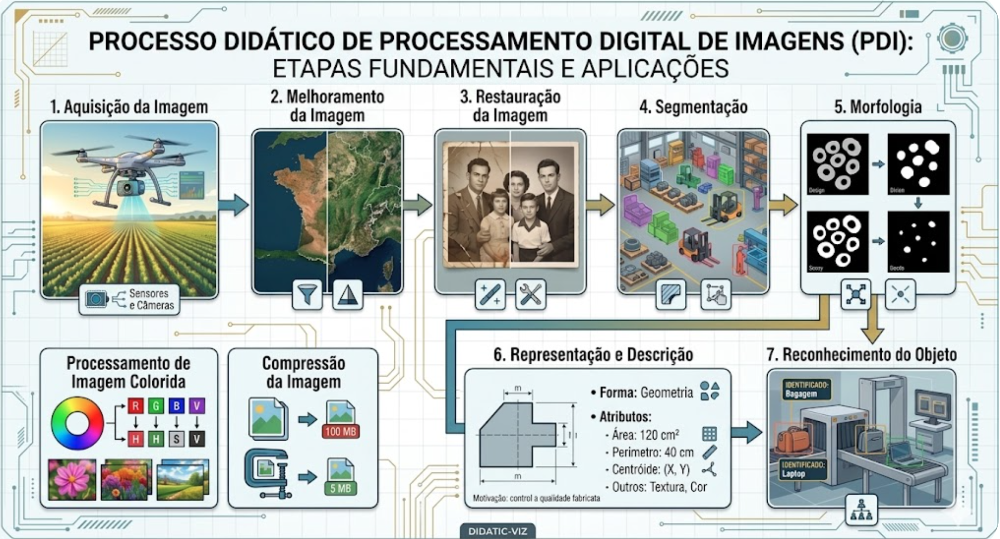
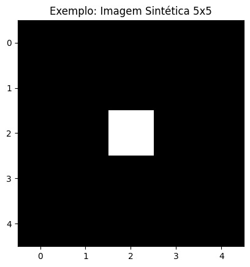

<!DOCTYPE html>
<html xmlns="http://www.w3.org/1999/xhtml" lang="pt" xml:lang="pt"><head>

<meta charset="utf-8">
<meta name="generator" content="quarto-1.8.27">

<meta name="viewport" content="width=device-width, initial-scale=1.0, user-scalable=yes">


<title>1&nbsp; Fundamentos e Primeiros Passos – Processamento Digital de Imagens e Visão Computacional</title>
<style>
code{white-space: pre-wrap;}
span.smallcaps{font-variant: small-caps;}
div.columns{display: flex; gap: min(4vw, 1.5em);}
div.column{flex: auto; overflow-x: auto;}
div.hanging-indent{margin-left: 1.5em; text-indent: -1.5em;}
ul.task-list{list-style: none;}
ul.task-list li input[type="checkbox"] {
  width: 0.8em;
  margin: 0 0.8em 0.2em -1em; /* quarto-specific, see https://github.com/quarto-dev/quarto-cli/issues/4556 */ 
  vertical-align: middle;
}
/* CSS for syntax highlighting */
html { -webkit-text-size-adjust: 100%; }
pre > code.sourceCode { white-space: pre; position: relative; }
pre > code.sourceCode > span { display: inline-block; line-height: 1.25; }
pre > code.sourceCode > span:empty { height: 1.2em; }
.sourceCode { overflow: visible; }
code.sourceCode > span { color: inherit; text-decoration: inherit; }
div.sourceCode { margin: 1em 0; }
pre.sourceCode { margin: 0; }
@media screen {
div.sourceCode { overflow: auto; }
}
@media print {
pre > code.sourceCode { white-space: pre-wrap; }
pre > code.sourceCode > span { text-indent: -5em; padding-left: 5em; }
}
pre.numberSource code
  { counter-reset: source-line 0; }
pre.numberSource code > span
  { position: relative; left: -4em; counter-increment: source-line; }
pre.numberSource code > span > a:first-child::before
  { content: counter(source-line);
    position: relative; left: -1em; text-align: right; vertical-align: baseline;
    border: none; display: inline-block;
    -webkit-touch-callout: none; -webkit-user-select: none;
    -khtml-user-select: none; -moz-user-select: none;
    -ms-user-select: none; user-select: none;
    padding: 0 4px; width: 4em;
  }
pre.numberSource { margin-left: 3em;  padding-left: 4px; }
div.sourceCode
  {   }
@media screen {
pre > code.sourceCode > span > a:first-child::before { text-decoration: underline; }
}
/* CSS for citations */
div.csl-bib-body { }
div.csl-entry {
  clear: both;
  margin-bottom: 1em;
}
.hanging-indent div.csl-entry {
  margin-left:2em;
  text-indent:-2em;
}
div.csl-left-margin {
  min-width:2em;
  float:left;
}
div.csl-right-inline {
  margin-left:2em;
  padding-left:1em;
}
div.csl-indent {
  margin-left: 2em;
}</style>


<script src="https://cdn.jsdelivr.net/npm/jquery@3.5.1/dist/jquery.min.js" integrity="sha384-ZvpUoO/+PpLXR1lu4jmpXWu80pZlYUAfxl5NsBMWOEPSjUn/6Z/hRTt8+pR6L4N2" crossorigin="anonymous"></script><script src="../site_libs/quarto-nav/quarto-nav.js"></script>
<script src="../site_libs/quarto-nav/headroom.min.js"></script>
<script src="../site_libs/clipboard/clipboard.min.js"></script>
<script src="../site_libs/quarto-search/autocomplete.umd.js"></script>
<script src="../site_libs/quarto-search/fuse.min.js"></script>
<script src="../site_libs/quarto-search/quarto-search.js"></script>
<meta name="quarto:offset" content="../">
<link href="../cap02/cap02.py.pt.html" rel="next">
<link href="../prefacio.html" rel="prev">
<script src="../site_libs/quarto-html/quarto.js" type="module"></script>
<script src="../site_libs/quarto-html/tabsets/tabsets.js" type="module"></script>
<script src="../site_libs/quarto-html/axe/axe-check.js" type="module"></script>
<script src="../site_libs/quarto-html/popper.min.js"></script>
<script src="../site_libs/quarto-html/tippy.umd.min.js"></script>
<script src="../site_libs/quarto-html/anchor.min.js"></script>
<link href="../site_libs/quarto-html/tippy.css" rel="stylesheet">
<link href="../site_libs/quarto-html/quarto-syntax-highlighting-8b4baf804e461d9b72633f0de59a0cac.css" rel="stylesheet" id="quarto-text-highlighting-styles">
<script src="../site_libs/bootstrap/bootstrap.min.js"></script>
<link href="../site_libs/bootstrap/bootstrap-icons.css" rel="stylesheet">
<link href="../site_libs/bootstrap/bootstrap-ea07c801963e0f738b5ea27386c64fa2.min.css" rel="stylesheet" append-hash="true" id="quarto-bootstrap" data-mode="light">
<script id="quarto-search-options" type="application/json">{
  "location": "sidebar",
  "copy-button": false,
  "collapse-after": 3,
  "panel-placement": "start",
  "type": "textbox",
  "limit": 50,
  "keyboard-shortcut": [
    "f",
    "/",
    "s"
  ],
  "show-item-context": false,
  "language": {
    "search-no-results-text": "Nenhum resultado",
    "search-matching-documents-text": "documentos correspondentes",
    "search-copy-link-title": "Copiar link para a busca",
    "search-hide-matches-text": "Esconder correspondências adicionais",
    "search-more-match-text": "mais correspondência neste documento",
    "search-more-matches-text": "mais correspondências neste documento",
    "search-clear-button-title": "Limpar",
    "search-text-placeholder": "",
    "search-detached-cancel-button-title": "Cancelar",
    "search-submit-button-title": "Enviar",
    "search-label": "Procurar"
  }
}</script>

<!-- Configurações para HTML -->
<style>
code {
  font-size: 0.9em;
}
pre {
  background-color: #f5f5f5;
  padding: 1em;
  border-radius: 4px;
}
</style>
<script src="https://cdn.jsdelivr.net/npm/requirejs@2.3.6/require.min.js" integrity="sha384-c9c+LnTbwQ3aujuU7ULEPVvgLs+Fn6fJUvIGTsuu1ZcCf11fiEubah0ttpca4ntM sha384-6V1/AdqZRWk1KAlWbKBlGhN7VG4iE/yAZcO6NZPMF8od0vukrvr0tg4qY6NSrItx" crossorigin="anonymous"></script>

<script type="application/javascript">define('jquery', [],function() {return window.jQuery;})</script>

  <script src="https://cdnjs.cloudflare.com/polyfill/v3/polyfill.min.js?features=es6"></script>
  <script src="https://cdn.jsdelivr.net/npm/mathjax@3/es5/tex-chtml-full.js" type="text/javascript"></script>

<script type="text/javascript">
const typesetMath = (el) => {
  if (window.MathJax) {
    // MathJax Typeset
    window.MathJax.typeset([el]);
  } else if (window.katex) {
    // KaTeX Render
    var mathElements = el.getElementsByClassName("math");
    var macros = [];
    for (var i = 0; i < mathElements.length; i++) {
      var texText = mathElements[i].firstChild;
      if (mathElements[i].tagName == "SPAN" && texText && texText.data) {
        window.katex.render(texText.data, mathElements[i], {
          displayMode: mathElements[i].classList.contains('display'),
          throwOnError: false,
          macros: macros,
          fleqn: false
        });
      }
    }
  }
}
window.Quarto = {
  typesetMath
};
</script>

</head>

<body class="nav-sidebar floating quarto-light">

<div id="quarto-search-results"></div>
  <header id="quarto-header" class="headroom fixed-top">
  <nav class="quarto-secondary-nav">
    <div class="container-fluid d-flex">
      <button type="button" class="quarto-btn-toggle btn" data-bs-toggle="collapse" role="button" data-bs-target=".quarto-sidebar-collapse-item" aria-controls="quarto-sidebar" aria-expanded="false" aria-label="Alternar barra lateral" onclick="if (window.quartoToggleHeadroom) { window.quartoToggleHeadroom(); }">
        <i class="bi bi-layout-text-sidebar-reverse"></i>
      </button>
        <nav class="quarto-page-breadcrumbs" aria-label="breadcrumb"><ol class="breadcrumb"><li class="breadcrumb-item"><a href="../cap01/cap01.py.pt.html">Parte I — Fundamentos de PDI</a></li><li class="breadcrumb-item"><a href="../cap01/cap01.py.pt.html"><span class="chapter-number">1</span>&nbsp; <span class="chapter-title">Fundamentos e Primeiros Passos</span></a></li></ol></nav>
        <a class="flex-grow-1" role="navigation" data-bs-toggle="collapse" data-bs-target=".quarto-sidebar-collapse-item" aria-controls="quarto-sidebar" aria-expanded="false" aria-label="Alternar barra lateral" onclick="if (window.quartoToggleHeadroom) { window.quartoToggleHeadroom(); }">      
        </a>
      <button type="button" class="btn quarto-search-button" aria-label="Procurar" onclick="window.quartoOpenSearch();">
        <i class="bi bi-search"></i>
      </button>
    </div>
  </nav>
</header>
<!-- content -->
<div id="quarto-content" class="quarto-container page-columns page-rows-contents page-layout-article">
<!-- sidebar -->
  <nav id="quarto-sidebar" class="sidebar collapse collapse-horizontal quarto-sidebar-collapse-item sidebar-navigation floating overflow-auto">
    <div class="pt-lg-2 mt-2 text-left sidebar-header">
    <div class="sidebar-title mb-0 py-0">
      <a href="../">Processamento Digital de Imagens e Visão Computacional</a> 
        <div class="sidebar-tools-main">
    <a href="../Processamento-Digital-de-Imagens-e-Visão-Computacional.pdf" title="Download PDF" class="quarto-navigation-tool px-1" aria-label="Download PDF"><i class="bi bi-file-pdf"></i></a>
</div>
    </div>
      </div>
        <div class="mt-2 flex-shrink-0 align-items-center">
        <div class="sidebar-search">
        <div id="quarto-search" class="" title="Procurar"></div>
        </div>
        </div>
    <div class="sidebar-menu-container"> 
    <ul class="list-unstyled mt-1">
        <li class="sidebar-item">
  <div class="sidebar-item-container"> 
  <a href="../index.html" class="sidebar-item-text sidebar-link">
 <span class="menu-text">PDI e VC — Python</span></a>
  </div>
</li>
        <li class="sidebar-item">
  <div class="sidebar-item-container"> 
  <a href="../prefacio.html" class="sidebar-item-text sidebar-link">
 <span class="menu-text">Prefácio</span></a>
  </div>
</li>
        <li class="sidebar-item sidebar-item-section">
      <div class="sidebar-item-container"> 
            <a class="sidebar-item-text sidebar-link text-start" data-bs-toggle="collapse" data-bs-target="#quarto-sidebar-section-1" role="navigation" aria-expanded="true">
 <span class="menu-text">Parte I — Fundamentos de PDI</span></a>
          <a class="sidebar-item-toggle text-start" data-bs-toggle="collapse" data-bs-target="#quarto-sidebar-section-1" role="navigation" aria-expanded="true" aria-label="Alternar seção">
            <i class="bi bi-chevron-right ms-2"></i>
          </a> 
      </div>
      <ul id="quarto-sidebar-section-1" class="collapse list-unstyled sidebar-section depth1 show">  
          <li class="sidebar-item">
  <div class="sidebar-item-container"> 
  <a href="../cap01/cap01.py.pt.html" class="sidebar-item-text sidebar-link active">
 <span class="menu-text"><span class="chapter-number">1</span>&nbsp; <span class="chapter-title">Fundamentos e Primeiros Passos</span></span></a>
  </div>
</li>
          <li class="sidebar-item">
  <div class="sidebar-item-container"> 
  <a href="../cap02/cap02.py.pt.html" class="sidebar-item-text sidebar-link">
 <span class="menu-text"><span class="chapter-number">2</span>&nbsp; <span class="chapter-title">Da Captura ao Pixel - Amostragem, Quantização e Conectividade</span></span></a>
  </div>
</li>
          <li class="sidebar-item">
  <div class="sidebar-item-container"> 
  <a href="../cap03/cap03.py.pt.html" class="sidebar-item-text sidebar-link">
 <span class="menu-text"><span class="chapter-number">3</span>&nbsp; <span class="chapter-title">Operações Espaciais: Transformações Geométricas, Convolução e Morfologia</span></span></a>
  </div>
</li>
      </ul>
  </li>
        <li class="sidebar-item sidebar-item-section">
      <div class="sidebar-item-container"> 
            <a class="sidebar-item-text sidebar-link text-start" data-bs-toggle="collapse" data-bs-target="#quarto-sidebar-section-2" role="navigation" aria-expanded="true">
 <span class="menu-text">Appendices</span></a>
          <a class="sidebar-item-toggle text-start" data-bs-toggle="collapse" data-bs-target="#quarto-sidebar-section-2" role="navigation" aria-expanded="true" aria-label="Alternar seção">
            <i class="bi bi-chevron-right ms-2"></i>
          </a> 
      </div>
      <ul id="quarto-sidebar-section-2" class="collapse list-unstyled sidebar-section depth1 show">  
          <li class="sidebar-item">
  <div class="sidebar-item-container"> 
  <a href="../referencias.html" class="sidebar-item-text sidebar-link">
 <span class="menu-text">Referências</span></a>
  </div>
</li>
      </ul>
  </li>
    </ul>
    </div>
</nav>
<div id="quarto-sidebar-glass" class="quarto-sidebar-collapse-item" data-bs-toggle="collapse" data-bs-target=".quarto-sidebar-collapse-item"></div>
<!-- margin-sidebar -->
    <div id="quarto-margin-sidebar" class="sidebar margin-sidebar">
        <nav id="TOC" role="doc-toc" class="toc-active">
    <h2 id="toc-title">Índice</h2>
   
  <ul>
  <li><a href="#objetivos" id="toc-objetivos" class="nav-link active" data-scroll-target="#objetivos"><span class="header-section-number">1.1</span> Objetivos</a></li>
  <li><a href="#antes-de-começar-notebooks-em-python" id="toc-antes-de-começar-notebooks-em-python" class="nav-link" data-scroll-target="#antes-de-começar-notebooks-em-python"><span class="header-section-number">1.2</span> Antes de começar: <em>Notebooks</em> em Python</a></li>
  <li><a href="#fundamentos" id="toc-fundamentos" class="nav-link" data-scroll-target="#fundamentos"><span class="header-section-number">1.3</span> Fundamentos</a>
  <ul class="collapse">
  <li><a href="#visão-computacional" id="toc-visão-computacional" class="nav-link" data-scroll-target="#visão-computacional"><span class="header-section-number">1.3.1</span> 👁️ Visão Computacional</a></li>
  <li><a href="#processamento-digital-de-imagens-pdi" id="toc-processamento-digital-de-imagens-pdi" class="nav-link" data-scroll-target="#processamento-digital-de-imagens-pdi"><span class="header-section-number">1.3.2</span> 🖼️ Processamento Digital de Imagens (PDI)</a></li>
  <li><a href="#como-as-outras-áreas-se-conectam" id="toc-como-as-outras-áreas-se-conectam" class="nav-link" data-scroll-target="#como-as-outras-áreas-se-conectam"><span class="header-section-number">1.3.3</span> Como as “Outras Áreas” se conectam</a></li>
  </ul></li>
  <li><a href="#etapas-do-pdi" id="toc-etapas-do-pdi" class="nav-link" data-scroll-target="#etapas-do-pdi"><span class="header-section-number">1.4</span> Etapas do PDI</a></li>
  <li><a href="#formação-da-imagem-e-o-espectro" id="toc-formação-da-imagem-e-o-espectro" class="nav-link" data-scroll-target="#formação-da-imagem-e-o-espectro"><span class="header-section-number">1.5</span> Formação da Imagem e o Espectro</a></li>
  <li><a href="#o-que-é-uma-imagem-digital" id="toc-o-que-é-uma-imagem-digital" class="nav-link" data-scroll-target="#o-que-é-uma-imagem-digital"><span class="header-section-number">1.6</span> O que é uma Imagem Digital?</a>
  <ul class="collapse">
  <li><a href="#representação-matemática" id="toc-representação-matemática" class="nav-link" data-scroll-target="#representação-matemática">Representação Matemática</a></li>
  </ul></li>
  <li><a href="#configuração-do-ambiente" id="toc-configuração-do-ambiente" class="nav-link" data-scroll-target="#configuração-do-ambiente"><span class="header-section-number">1.7</span> Configuração do Ambiente</a>
  <ul class="collapse">
  <li><a href="#bibliotecas-utilizadas" id="toc-bibliotecas-utilizadas" class="nav-link" data-scroll-target="#bibliotecas-utilizadas"><span class="header-section-number">1.7.1</span> 📦 Bibliotecas utilizadas</a></li>
  </ul></li>
  <li><a href="#fundamentos-de-matrizes-cuidado" id="toc-fundamentos-de-matrizes-cuidado" class="nav-link" data-scroll-target="#fundamentos-de-matrizes-cuidado"><span class="header-section-number">1.8</span> Fundamentos de Matrizes (Cuidado!)</a></li>
  <li><a href="#lendo-e-exibindo-imagens" id="toc-lendo-e-exibindo-imagens" class="nav-link" data-scroll-target="#lendo-e-exibindo-imagens"><span class="header-section-number">1.9</span> Lendo e Exibindo Imagens</a>
  <ul class="collapse">
  <li><a href="#alternativa-baixando-a-imagem-localmente" id="toc-alternativa-baixando-a-imagem-localmente" class="nav-link" data-scroll-target="#alternativa-baixando-a-imagem-localmente">Alternativa: Baixando a imagem localmente</a></li>
  </ul></li>
  <li><a href="#conversão-de-tipos-e-limiarização" id="toc-conversão-de-tipos-e-limiarização" class="nav-link" data-scroll-target="#conversão-de-tipos-e-limiarização"><span class="header-section-number">1.10</span> Conversão de Tipos e Limiarização</a>
  <ul class="collapse">
  <li><a href="#conversão-para-tons-de-cinza" id="toc-conversão-para-tons-de-cinza" class="nav-link" data-scroll-target="#conversão-para-tons-de-cinza">Conversão para Tons de Cinza</a></li>
  <li><a href="#limiarização-thresholding" id="toc-limiarização-thresholding" class="nav-link" data-scroll-target="#limiarização-thresholding">Limiarização (<em>Thresholding</em>)</a></li>
  <li><a href="#exemplo-prático-de-conversão-e-limiarização" id="toc-exemplo-prático-de-conversão-e-limiarização" class="nav-link" data-scroll-target="#exemplo-prático-de-conversão-e-limiarização">Exemplo prático de conversão e limiarização</a></li>
  </ul></li>
  <li><a href="#limiarização-pelo-método-de-otsu" id="toc-limiarização-pelo-método-de-otsu" class="nav-link" data-scroll-target="#limiarização-pelo-método-de-otsu"><span class="header-section-number">1.11</span> Limiarização pelo método de Otsu</a></li>
  <li><a href="#acesso-a-pixels" id="toc-acesso-a-pixels" class="nav-link" data-scroll-target="#acesso-a-pixels"><span class="header-section-number">1.12</span> Acesso a Pixels</a></li>
  <li><a href="#resumo" id="toc-resumo" class="nav-link" data-scroll-target="#resumo"><span class="header-section-number">1.13</span> Resumo</a></li>
  <li><a href="#uso-do-notebooklm-como-tutor-complementar" id="toc-uso-do-notebooklm-como-tutor-complementar" class="nav-link" data-scroll-target="#uso-do-notebooklm-como-tutor-complementar"><span class="header-section-number">1.14</span> 🤖 Uso do NotebookLM como Tutor Complementar</a>
  <ul class="collapse">
  <li><a href="#funcionalidades-disponíveis-na-plataforma" id="toc-funcionalidades-disponíveis-na-plataforma" class="nav-link" data-scroll-target="#funcionalidades-disponíveis-na-plataforma">Funcionalidades Disponíveis na Plataforma</a></li>
  </ul></li>
  <li><a href="#lista-de-exercícios" id="toc-lista-de-exercícios" class="nav-link" data-scroll-target="#lista-de-exercícios"><span class="header-section-number">1.15</span> Lista de Exercícios</a></li>
  <li><a href="#referências-do-capítulo" id="toc-referências-do-capítulo" class="nav-link" data-scroll-target="#referências-do-capítulo"><span class="header-section-number">1.16</span> Referências do Capítulo</a></li>
  <li><a href="#parte-prática-com-exercícios-de-programação" id="toc-parte-prática-com-exercícios-de-programação" class="nav-link" data-scroll-target="#parte-prática-com-exercícios-de-programação"><span class="header-section-number">1.17</span> 💻 <strong>Parte Prática com Exercícios de Programação</strong></a>
  <ul class="collapse">
  <li><a href="#objetivo-deste-caderno" id="toc-objetivo-deste-caderno" class="nav-link" data-scroll-target="#objetivo-deste-caderno"><span class="header-section-number">1.17.1</span> 🎯 Objetivo deste Caderno</a></li>
  <li><a href="#instruções-passo-a-passo" id="toc-instruções-passo-a-passo" class="nav-link" data-scroll-target="#instruções-passo-a-passo"><span class="header-section-number">1.17.2</span> ⚙️ Instruções Passo a Passo</a></li>
  <li><a href="#importante-regras-e-boas-práticas" id="toc-importante-regras-e-boas-práticas" class="nav-link" data-scroll-target="#importante-regras-e-boas-práticas"><span class="header-section-number">1.17.3</span> ⚠️ Importante: Regras e Boas Práticas</a></li>
  <li><a href="#ep01_01-distância-entre-pontos-geometria-e-math" id="toc-ep01_01-distância-entre-pontos-geometria-e-math" class="nav-link" data-scroll-target="#ep01_01-distância-entre-pontos-geometria-e-math"><span class="header-section-number">1.17.4</span> EP01_01 📏 Distância entre Pontos — Geometria e Math</a></li>
  <li><a href="#ep01_02-desempenho-preditivo-métricas-de-ml" id="toc-ep01_02-desempenho-preditivo-métricas-de-ml" class="nav-link" data-scroll-target="#ep01_02-desempenho-preditivo-métricas-de-ml"><span class="header-section-number">1.17.5</span> EP01_02 📊 Desempenho Preditivo — Métricas de ML</a></li>
  </ul></li>
  </ul>
</nav>
    </div>
<!-- main -->
<main class="content" id="quarto-document-content">

<header id="title-block-header" class="quarto-title-block default"><nav class="quarto-page-breadcrumbs quarto-title-breadcrumbs d-none d-lg-block" aria-label="breadcrumb"><ol class="breadcrumb"><li class="breadcrumb-item"><a href="../cap01/cap01.py.pt.html">Parte I — Fundamentos de PDI</a></li><li class="breadcrumb-item"><a href="../cap01/cap01.py.pt.html"><span class="chapter-number">1</span>&nbsp; <span class="chapter-title">Fundamentos e Primeiros Passos</span></a></li></ol></nav>
<div class="quarto-title">
<h1 class="title"><span class="chapter-number">1</span>&nbsp; <span class="chapter-title">Fundamentos e Primeiros Passos</span></h1>
</div>


<div class="quarto-title-meta">

    
  
    
  </div>
  


</header>


<p><a href="https://colab.research.google.com/github/fzampirolli/pdi-vc/blob/master/notebooks_alunos/cap01/cap01_aluno.ipynb"></a> <a href="https://github.com/fzampirolli/pdi-vc"></a></p>
<p>Este capítulo inaugura a <strong>Parte 1</strong> do livro, focada nos fundamentos do Processamento Digital de Imagens (PDI). Aqui, você aprenderá como as imagens são representadas matematicamente e como manipulá-las usando Python e a biblioteca <code>morph.py</code> <span class="citation" data-cites="zampirolli2025morph">(<a href="../referencias.html#ref-zampirolli2025morph" role="doc-biblioref">Zampirolli et al., 2025</a>)</span>.</p>
<section id="objetivos" class="level2" data-number="1.1">
<h2 data-number="1.1" class="anchored" data-anchor-id="objetivos"><span class="header-section-number">1.1</span> Objetivos</h2>
<p>Ao final deste capítulo, você será capaz de:</p>
<ul>
<li>Compreender a natureza física e matemática da imagem digital <span class="math inline">\(f(x,y)\)</span>.</li>
<li>Identificar as faixas do espectro eletromagnético relevantes para PDI.</li>
<li>Configurar o ambiente de desenvolvimento em Python.</li>
<li>Realizar operações básicas: leitura, exibição e salvamento de imagens.</li>
<li>Manipular estruturas de matrizes (NumPy) sem cair em armadilhas de memória.</li>
<li>Acessar e modificar intensidades de pixels individualmente.</li>
<li>Aplicar limiarização manual.</li>
</ul>
</section>
<section id="antes-de-começar-notebooks-em-python" class="level2" data-number="1.2">
<h2 data-number="1.2" class="anchored" data-anchor-id="antes-de-começar-notebooks-em-python"><span class="header-section-number">1.2</span> Antes de começar: <em>Notebooks</em> em Python</h2>
<p>Este material foi construído sob o conceito de <strong><em>Literate Programming</em></strong> (Programação Literária), idealizado por Donald Knuth na década de 84 <span class="citation" data-cites="knuth_literate_1984">(<a href="../referencias.html#ref-knuth_literate_1984" role="doc-biblioref">Knuth, 1984</a>)</span>. Knuth — também criador do sistema <strong>TeX</strong> para tipografia digital — propôs que os programas fossem escritos como uma narrativa lógica para seres humanos, intercalando código e documentação.</p>
<p>Para executar uma célula, pressione <kbd>Shift</kbd> + <kbd>Enter</kbd> ou clique no botão ▶️.</p>
<div class="callout callout-style-default callout-note callout-titled">
<div class="callout-header d-flex align-content-center">
<div class="callout-icon-container">
<i class="callout-icon"></i>
</div>
<div class="callout-title-container flex-fill">
<span class="screen-reader-only">Nota</span>Nota sobre o formato
</div>
</div>
<div class="callout-body-container callout-body">
<p>Se você estiver lendo a versão renderizada (PDF ou HTML), o código aparecerá como blocos estáticos. Para interagir, acesse o link do <strong>Google Colab</strong> no topo da página.</p>
</div>
</div>
</section>
<section id="fundamentos" class="level2" data-number="1.3">
<h2 data-number="1.3" class="anchored" data-anchor-id="fundamentos"><span class="header-section-number">1.3</span> Fundamentos</h2>
<p>O estudo de sistemas baseados em imagens compreende um ecossistema de disciplinas integradas que transformam dados visuais brutos em conhecimento estruturado. Enquanto algumas áreas focam na geração de representações, outras dedicam-se ao tratamento e à análise desses dados para dar suporte a aplicações tecnológicas complexas.</p>
<p>O diagrama apresentado no <a href="../cap03/cap03.py.pt.html#fig-1-representacao" class="quarto-xref">Figura&nbsp;<span>3.1</span></a> estabelece a distinção e complementaridade entre o Processamento de Imagens (PDI) e a Visão Computacional (VC). O PDI, destacado em <strong>verde</strong>, tem como foco a transformação de imagem para imagem, visando melhoria de qualidade ou pré-processamento, como a remoção de ruídos e realce de contraste.</p>
<p>Em contrapartida, a VC, assinalada em <strong>azul</strong>, foca na interpretação do conteúdo visual para extrair modelos ou informações, como o reconhecimento de objetos e gestos. A região de intersecção ilustra a sinergia entre as áreas, onde o PDI prepara os dados visuais para a interpretação pela VC. O mapa também demonstra as interconexões de ambas as disciplinas com áreas como Robótica, Computação Gráfica, Inteligência Artificial e Neurociência.</p>
<div id="fig-1-representacao" class="quarto-float quarto-figure quarto-figure-center anchored" data-fig-align="center">
<figure class="quarto-float quarto-float-fig figure">
<div aria-describedby="fig-1-representacao-caption-0ceaefa1-69ba-4598-a22c-09a6ac19f8ca">

</div>
<figcaption class="quarto-float-caption-bottom quarto-float-caption quarto-float-fig" id="fig-1-representacao-caption-0ceaefa1-69ba-4598-a22c-09a6ac19f8ca">
Figura&nbsp;1.1: Diagrama relacional detalhando as distinções fundamentais, sinergias e interconexões entre Processamento de Imagens e Visão Computacional no contexto de sistemas baseados em imagens.
</figcaption>
</figure>
</div>
<section id="visão-computacional" class="level3" data-number="1.3.1">
<h3 data-number="1.3.1" class="anchored" data-anchor-id="visão-computacional"><span class="header-section-number">1.3.1</span> 👁️ Visão Computacional</h3>
<ul>
<li><strong>Foco:</strong> <em>Imagem → Modelo</em> (caminho inverso da Computação Gráfica).<br>
</li>
<li><strong>Objetivo:</strong> Extrair informação de alto nível a partir de imagens ou vídeos.<br>
</li>
<li><strong>Aplicações típicas:</strong>
<ul>
<li>Robótica – detecção de obstáculos, localização e navegação autônoma.</li>
<li>Vigilância e inspeção – reconhecimento de eventos, leitura de placas, controle de qualidade.</li>
<li>Sensoriamento remoto – análise de imagens de satélite, mapeamento ambiental.</li>
<li>Imagens médicas – detecção de tumores, segmentação de órgãos, auxílio ao diagnóstico.</li>
<li>Interação humano‑computador – reconhecimento de gestos, expressões faciais, rastreamento ocular.</li>
</ul></li>
<li><strong>Relação com outras áreas:</strong> utiliza técnicas de Aprendizado de Máquina e IA para classificar e interpretar cenas; serve como “olhos” da Robótica.</li>
</ul>
</section>
<section id="processamento-digital-de-imagens-pdi" class="level3" data-number="1.3.2">
<h3 data-number="1.3.2" class="anchored" data-anchor-id="processamento-digital-de-imagens-pdi"><span class="header-section-number">1.3.2</span> 🖼️ Processamento Digital de Imagens (PDI)</h3>
<ul>
<li><strong>Foco:</strong> <em>Imagem → Imagem</em> (geralmente – transformação de uma imagem em outra).<br>
</li>
<li><strong>Objetivo:</strong> Melhorar a qualidade visual ou extrair características de baixo nível.<br>
</li>
<li><strong>Aplicações comuns:</strong>
<ul>
<li>Eliminação de ruídos (filtros de média, mediana, gaussiano).</li>
<li>Melhoria de contraste (equalização de histograma, ajuste gamma).</li>
<li>Detecção de bordas (Sobel, Canny, Laplaciano).</li>
<li>Segmentação (limiarização, crescimento de regiões, <em>watershed</em>).</li>
<li>Transformações geométricas (redimensionamento, rotação, correção de perspectiva).</li>
</ul></li>
<li><strong>Relação com outras áreas:</strong>
<ul>
<li>É a <strong>base</strong> para a maioria dos sistemas de Visão Computacional (pré‑processamento).<br>
</li>
<li>A Computação Gráfica frequentemente aplica PDI para pós‑processamento (ex.: suavização, realce).<br>
</li>
<li>Técnicas de IA podem otimizar parâmetros de processamento (ex.: aprendizado de filtros).</li>
</ul></li>
</ul>
</section>
<section id="como-as-outras-áreas-se-conectam" class="level3" data-number="1.3.3">
<h3 data-number="1.3.3" class="anchored" data-anchor-id="como-as-outras-áreas-se-conectam"><span class="header-section-number">1.3.3</span> Como as “Outras Áreas” se conectam</h3>
<table class="caption-top table">
<colgroup>
<col style="width: 23%">
<col style="width: 76%">
</colgroup>
<thead>
<tr class="header">
<th>Área</th>
<th>Relação com PDI e VC</th>
</tr>
</thead>
<tbody>
<tr class="odd">
<td><strong>Inteligência Artificial</strong></td>
<td>Fornece modelos (redes neurais, SVM) que interpretam saídas da VC.</td>
</tr>
<tr class="even">
<td><strong>Robótica</strong></td>
<td>Consome dados de VC para tomar decisões (navegação, manipulação).</td>
</tr>
<tr class="odd">
<td><strong>Aprendizado de Máquina</strong></td>
<td>Usa descritores extraídos pelo PDI/VC para treinar classificadores.</td>
</tr>
<tr class="even">
<td><strong>Computação Gráfica</strong></td>
<td>Caminho inverso: <em>modelo → imagem</em>; muitas vezes aplica PDI para renderização realista.</td>
</tr>
<tr class="odd">
<td><strong>Neurociência</strong></td>
<td>Inspira modelos de PDI (ex.: filtros semelhantes a células ganglionares da retina).</td>
</tr>
</tbody>
</table>
</section>
</section>
<section id="etapas-do-pdi" class="level2" data-number="1.4">
<h2 data-number="1.4" class="anchored" data-anchor-id="etapas-do-pdi"><span class="header-section-number">1.4</span> Etapas do PDI</h2>
<p>As etapas do PDI são apresentadas na <a href="#fig-1-etapas" class="quarto-xref">Figura&nbsp;<span>1.2</span></a>, que podem ser compreendidas como uma cadeia de transformações que reduz a redundância dos dados em busca de significado:</p>
<ul>
<li><strong>Baixo Nível:</strong> Atua diretamente sobre os pixels da imagem ruidosa para realizar melhorias e filtragens, gerando como saída uma imagem limpa ou realçada.</li>
<li><strong>Médio Nível:</strong> Recebe a imagem tratada e realiza a segmentação e descrição, transformando a matriz de pixels em atributos estruturados (forma, tamanho e textura).</li>
<li><strong>Alto Nível:</strong> Utiliza a tabela de atributos para alimentar processos de lógica e inteligência artificial, resultando na decisão ou reconhecimento final (como o diagnóstico médico).</li>
</ul>
<div id="fig-1-etapas" class="quarto-float quarto-figure quarto-figure-center anchored" data-fig-align="center">
<figure class="quarto-float quarto-float-fig figure">
<div aria-describedby="fig-1-etapas-caption-0ceaefa1-69ba-4598-a22c-09a6ac19f8ca">

</div>
<figcaption class="quarto-float-caption-bottom quarto-float-caption quarto-float-fig" id="fig-1-etapas-caption-0ceaefa1-69ba-4598-a22c-09a6ac19f8ca">
Figura&nbsp;1.2: Representação do fluxo sequencial de processamento: a saída de cada nível torna-se a entrada do nível subsequente.
</figcaption>
</figure>
</div>
<p>Detalhando mais essas etapas, a <a href="#fig-1-etapas2" class="quarto-xref">Figura&nbsp;<span>1.3</span></a> ilustra a jornada completa da informação visual, desde a sua captura até a interpretação final. O fluxo inicia-se na <strong>Aquisição da Imagem (1)</strong> e avança por processos de tratamento como o <strong>Melhoramento (2)</strong> e a <strong>Restauração (3)</strong>. Em seguida, o conteúdo é isolado através da <strong>Segmentação (4)</strong> e refinado pela <strong>Morfologia (5)</strong>. O estágio crucial de transição ocorre na <strong>Representação e Descrição (6)</strong>, onde objetos visuais são convertidos em dados matemáticos (como área e perímetro), permitindo que o sistema execute o <strong>Reconhecimento do Objeto (7)</strong>. Este ecossistema é suportado por pilares como o <strong>Processamento de Imagem Colorida</strong> e a <strong>Compressão</strong>, que garantem a eficiência no armazenamento e análise dos dados.</p>
<div id="fig-1-etapas2" class="quarto-float quarto-figure quarto-figure-center anchored" data-fig-align="center">
<figure class="quarto-float quarto-float-fig figure">
<div aria-describedby="fig-1-etapas2-caption-0ceaefa1-69ba-4598-a22c-09a6ac19f8ca">

</div>
<figcaption class="quarto-float-caption-bottom quarto-float-caption quarto-float-fig" id="fig-1-etapas2-caption-0ceaefa1-69ba-4598-a22c-09a6ac19f8ca">
Figura&nbsp;1.3: Fluxo detalhado do PDI: da aquisição sensorial à extração de atributos e reconhecimento automatizado, incluindo em processamento colorido e compressão.
</figcaption>
</figure>
</div>
</section>
<section id="formação-da-imagem-e-o-espectro" class="level2" data-number="1.5">
<h2 data-number="1.5" class="anchored" data-anchor-id="formação-da-imagem-e-o-espectro"><span class="header-section-number">1.5</span> Formação da Imagem e o Espectro</h2>
<p>O processo de formação de uma imagem é fundamentado na interação entre a matéria e a energia radiante. Essencialmente, uma imagem é concebida quando um <strong>sensor registra a radiação</strong> resultante da interação com um objeto físico. No contexto da visão humana e da fotografia convencional, este fenômeno depende de uma fonte de luz que ilumine a cena; as características dos objetos são então codificadas através das <strong>variações de intensidade e cor</strong> da luz que atinge o sensor, conforme ilustrado na <a href="#fig-1-luz" class="quarto-xref">Figura&nbsp;<span>1.4</span></a>.</p>
<div id="fig-1-luz" class="quarto-float quarto-figure quarto-figure-center anchored" data-fig-align="center">
<figure class="quarto-float quarto-float-fig figure">
<div aria-describedby="fig-1-luz-caption-0ceaefa1-69ba-4598-a22c-09a6ac19f8ca">

</div>
<figcaption class="quarto-float-caption-bottom quarto-float-caption quarto-float-fig" id="fig-1-luz-caption-0ceaefa1-69ba-4598-a22c-09a6ac19f8ca">
Figura&nbsp;1.4: Representação do espectro visível e sua posição em relação às demais radiações eletromagnéticas, destacando a variação dos comprimentos de onda de 380 nm a 750 nm.
</figcaption>
</figure>
</div>
<p>A <strong>luz visível</strong> ocupa apenas uma pequena faixa do espectro eletromagnético — entre <strong>380 nm (violeta)</strong> e <strong>750 nm (vermelho)</strong> —, conforme ilustrado na <a href="#fig-1-espectro" class="quarto-xref">Figura&nbsp;<span>1.5</span></a>. Sensores digitais convencionais operam nessa mesma janela, mas equipamentos especializados podem captar radiações invisíveis ao olho humano, como o infravermelho e os raios X. Em PDI, a imagem formada depende diretamente da sensibilidade espectral do sensor utilizado.</p>
<div id="cell-fig-1-espectro" class="cell" data-fig-width="16" data-fig-height="9">
<div class="cell-output cell-output-display">
<div id="fig-1-espectro" class="quarto-float quarto-figure quarto-figure-center anchored">
<figure class="quarto-float quarto-float-fig figure">
<div aria-describedby="fig-1-espectro-caption-0ceaefa1-69ba-4598-a22c-09a6ac19f8ca">

</div>
<figcaption class="quarto-float-caption-bottom quarto-float-caption quarto-float-fig" id="fig-1-espectro-caption-0ceaefa1-69ba-4598-a22c-09a6ac19f8ca">
Figura&nbsp;1.5: (A) Espectro eletromagnético completo em escala logarítmica, com destaque para a faixa visível. (B) Detalhe da luz visível (380–750 nm) e suas cores componentes. (C) Decomposição da luz branca pelo prisma: menor comprimento de onda sofre maior refração, separando UV, visível e infravermelho.
</figcaption>
</figure>
</div>
</div>
</div>
</section>
<section id="o-que-é-uma-imagem-digital" class="level2" data-number="1.6">
<h2 data-number="1.6" class="anchored" data-anchor-id="o-que-é-uma-imagem-digital"><span class="header-section-number">1.6</span> O que é uma Imagem Digital?</h2>
<p>Uma <strong>imagem digital</strong> é formada por uma grade de <strong>pixels</strong> (<em>Picture Elements</em>), onde cada pixel é a menor unidade elementar da imagem.</p>
<div class="callout callout-style-default callout-tip callout-titled">
<div class="callout-header d-flex align-content-center">
<div class="callout-icon-container">
<i class="callout-icon"></i>
</div>
<div class="callout-title-container flex-fill">
<span class="screen-reader-only">Dica</span>O que é um Pixel?
</div>
</div>
<div class="callout-body-container callout-body">
<p>Um <strong>pixel</strong> é a menor unidade que compõe uma imagem digital. Cada pixel ocupa uma posição única na grade e armazena um ou mais valores numéricos que representam sua intensidade ou cor.</p>
</div>
</div>
<section id="representação-matemática" class="level3 unnumbered">
<h3 class="unnumbered anchored" data-anchor-id="representação-matemática">Representação Matemática</h3>
<p>Diferente de uma função contínua, o domínio de uma imagem digital é um plano retangular finito <span class="math inline">\(\mathbb{E} \subset \mathbb{Z}^2\)</span>, que representa a grade de amostragem. Este domínio é indexado por coordenadas inteiras:</p>
<p><span id="eq-1-dominio"><span class="math display">\[
\mathbb{E}  = \{ (x, y) \in \mathbb{Z}^2 \mid 0 \le x &lt; L,\; 0 \le y &lt; H \}
\tag{1.1}\]</span></span></p>
<p>Onde:</p>
<ul>
<li><strong><span class="math inline">\(L\)</span></strong>: representa a largura da imagem (número de colunas).</li>
<li><strong><span class="math inline">\(H\)</span></strong>: representa a altura da imagem (número de linhas).</li>
</ul>
<p>A imagem digital é uma função que associa cada par de coordenadas <span class="math inline">\((x,y)\)</span> a um ou mais valores que descrevem a aparência do pixel.</p>
<p><span id="eq-1-image"><span class="math display">\[
f: \mathbb{E}  \to \mathcal{V}
\tag{1.2}\]</span></span></p>
<p>O conjunto <span class="math inline">\(\mathcal{V}\)</span> define os valores possíveis para o pixel (codomínio), variando conforme o tipo de imagem, como demonstrado na <a href="#tbl-1-tipos-imagem" class="quarto-xref">Tabela&nbsp;<span>1.1</span></a>.</p>
<div id="tbl-1-tipos-imagem" class="quarto-float quarto-figure quarto-figure-center anchored">
<figure class="quarto-float quarto-float-tbl figure">
<figcaption class="quarto-float-caption-top quarto-float-caption quarto-float-tbl" id="tbl-1-tipos-imagem-caption-0ceaefa1-69ba-4598-a22c-09a6ac19f8ca">
Tabela&nbsp;1.1: Principais tipos de imagem digital e seus respectivos conjuntos de valores possíveis para cada pixel.
</figcaption>
<div aria-describedby="tbl-1-tipos-imagem-caption-0ceaefa1-69ba-4598-a22c-09a6ac19f8ca">
<table class="caption-top table">
<thead>
<tr class="header">
<th style="text-align: left;">Tipo de imagem</th>
<th style="text-align: left;"><span class="math inline">\(\mathcal{V}\)</span> (valores do pixel)</th>
<th style="text-align: center;">Representação</th>
</tr>
</thead>
<tbody>
<tr class="odd">
<td style="text-align: left;"><strong>Binária</strong></td>
<td style="text-align: left;"><span class="math inline">\(\{0, 1\}\)</span> ou <span class="math inline">\(\{0, 255\}\)</span></td>
<td style="text-align: center;">⬛◻️</td>
</tr>
<tr class="even">
<td style="text-align: left;"><strong>Tons de cinza</strong></td>
<td style="text-align: left;"><span class="math inline">\(\{0, 1, \dots, 255\}\)</span></td>
<td style="text-align: center;">░▒▓█</td>
</tr>
<tr class="odd">
<td style="text-align: left;"><strong>Colorida (RGB)</strong></td>
<td style="text-align: left;"><span class="math inline">\(\{0, \dots, 255\}^3\)</span> (triplas)</td>
<td style="text-align: center;">🟥🟩🟦</td>
</tr>
</tbody>
</table>
</div>
</figure>
</div>
<p><strong>Exemplo prático:</strong> Uma imagem colorida (RGB) é representada matematicamente por uma função que retorna três valores para cada pixel. No computador, isso resulta em três matrizes sobrepostas (canais R, G e B), onde cada célula contém um valor de intensidade para aquele canal específico no pixel.</p>
</section>
</section>
<section id="configuração-do-ambiente" class="level2" data-number="1.7">
<h2 data-number="1.7" class="anchored" data-anchor-id="configuração-do-ambiente"><span class="header-section-number">1.7</span> Configuração do Ambiente</h2>
<p>Utilizaremos o ecossistema científico do Python, com destaque para o <strong>NumPy</strong> (matemática matricial), <strong>OpenCV</strong> (visão computacional padrão de mercado) e a biblioteca <strong>morph.py</strong> <span class="citation" data-cites="zampirolli2025morph">(<a href="../referencias.html#ref-zampirolli2025morph" role="doc-biblioref">Zampirolli et al., 2025</a>)</span>, desenvolvida especificamente para fins didáticos neste livro.</p>
<section id="bibliotecas-utilizadas" class="level3" data-number="1.7.1">
<h3 data-number="1.7.1" class="anchored" data-anchor-id="bibliotecas-utilizadas"><span class="header-section-number">1.7.1</span> 📦 Bibliotecas utilizadas</h3>
<table class="caption-top table">
<colgroup>
<col style="width: 40%">
<col style="width: 60%">
</colgroup>
<thead>
<tr class="header">
<th style="text-align: left;">Biblioteca</th>
<th style="text-align: left;">Função principal</th>
</tr>
</thead>
<tbody>
<tr class="odd">
<td style="text-align: left;"><code>numpy</code></td>
<td style="text-align: left;">Representação matricial de imagens</td>
</tr>
<tr class="even">
<td style="text-align: left;"><code>opencv-python</code></td>
<td style="text-align: left;">Leitura, escrita e operações de visão computacional</td>
</tr>
<tr class="odd">
<td style="text-align: left;"><code>matplotlib</code></td>
<td style="text-align: left;">Visualização de imagens e gráficos</td>
</tr>
<tr class="even">
<td style="text-align: left;"><code>morph.py</code></td>
<td style="text-align: left;">Abstração didática das operações de PDI</td>
</tr>
</tbody>
</table>
<div id="e0f29c02" class="cell" data-quarto-private-1="{&quot;key&quot;:&quot;pdi&quot;,&quot;value&quot;:{&quot;role&quot;:&quot;code&quot;}}" data-quarto-raw="true">
<div class="code-copy-outer-scaffold"><div class="sourceCode cell-code" id="cb1"><pre class="sourceCode python code-with-copy"><code class="sourceCode python"><span id="cb1-1"><a href="#cb1-1" aria-hidden="true" tabindex="-1"></a><span class="co"># Instalação (caso necessário no ambiente local)</span></span>
<span id="cb1-2"><a href="#cb1-2" aria-hidden="true" tabindex="-1"></a><span class="co"># !pip install opencv-python numpy matplotlib scikit-image gdown</span></span>
<span id="cb1-3"><a href="#cb1-3" aria-hidden="true" tabindex="-1"></a></span>
<span id="cb1-4"><a href="#cb1-4" aria-hidden="true" tabindex="-1"></a><span class="im">import</span> sys</span>
<span id="cb1-5"><a href="#cb1-5" aria-hidden="true" tabindex="-1"></a><span class="im">import</span> importlib</span>
<span id="cb1-6"><a href="#cb1-6" aria-hidden="true" tabindex="-1"></a><span class="im">import</span> numpy <span class="im">as</span> np</span>
<span id="cb1-7"><a href="#cb1-7" aria-hidden="true" tabindex="-1"></a><span class="im">import</span> cv2</span>
<span id="cb1-8"><a href="#cb1-8" aria-hidden="true" tabindex="-1"></a><span class="im">import</span> matplotlib.pyplot <span class="im">as</span> plt</span>
<span id="cb1-9"><a href="#cb1-9" aria-hidden="true" tabindex="-1"></a></span>
<span id="cb1-10"><a href="#cb1-10" aria-hidden="true" tabindex="-1"></a><span class="co"># Verificar onde esté morph.py para importação</span></span>
<span id="cb1-11"><a href="#cb1-11" aria-hidden="true" tabindex="-1"></a>sys.path.insert(<span class="dv">0</span>, <span class="st">'../../morph'</span>)</span>
<span id="cb1-12"><a href="#cb1-12" aria-hidden="true" tabindex="-1"></a><span class="im">import</span> morph</span>
<span id="cb1-13"><a href="#cb1-13" aria-hidden="true" tabindex="-1"></a>importlib.<span class="bu">reload</span>(morph)</span>
<span id="cb1-14"><a href="#cb1-14" aria-hidden="true" tabindex="-1"></a><span class="im">from</span> morph <span class="im">import</span> mm</span>
<span id="cb1-15"><a href="#cb1-15" aria-hidden="true" tabindex="-1"></a></span>
<span id="cb1-16"><a href="#cb1-16" aria-hidden="true" tabindex="-1"></a><span class="bu">print</span>(<span class="ss">f"Ambiente configurado:"</span>)</span>
<span id="cb1-17"><a href="#cb1-17" aria-hidden="true" tabindex="-1"></a><span class="bu">print</span>(<span class="ss">f"- OpenCV: </span><span class="sc">{</span>cv2<span class="sc">.</span>__version__<span class="sc">}</span><span class="ss">"</span>)</span>
<span id="cb1-18"><a href="#cb1-18" aria-hidden="true" tabindex="-1"></a><span class="bu">print</span>(<span class="ss">f"- NumPy: </span><span class="sc">{</span>np<span class="sc">.</span>__version__<span class="sc">}</span><span class="ss">"</span>)</span>
<span id="cb1-19"><a href="#cb1-19" aria-hidden="true" tabindex="-1"></a><span class="bu">help</span>(mm.show)</span></code></pre></div><button title="Copiar para a área de transferência" class="code-copy-button"><i class="bi"></i></button></div>
<div class="cell-output cell-output-stdout">
<pre><code>Ambiente configurado:
- OpenCV: 4.12.0
- NumPy: 2.2.6
Help on function show in module morph:

show(*args, title=None)
    This function will draw images f
    input: &lt;*args&gt; set of images f_i, where i&gt;0 is binary image
          &lt;title&gt; optional string title for the plot
    output: image drawing
    Example:
    f1, f2 = np.zeros((100, 100,3)),  np.zeros((100, 100))
    f2[50:60, 50:60] = 1
    mm.show(f1, f2, title='Exemplo')
</code></pre>
</div>
</div>
</section>
</section>
<section id="fundamentos-de-matrizes-cuidado" class="level2" data-number="1.8">
<h2 data-number="1.8" class="anchored" data-anchor-id="fundamentos-de-matrizes-cuidado"><span class="header-section-number">1.8</span> Fundamentos de Matrizes (Cuidado!)</h2>
<p>Como uma imagem digital é uma matriz, precisamos saber criá-las corretamente. Em Python, existe uma armadilha comum ao usar o operador * em listas:</p>
<div class="callout callout-style-default callout-warning callout-titled">
<div class="callout-header d-flex align-content-center">
<div class="callout-icon-container">
<i class="callout-icon"></i>
</div>
<div class="callout-title-container flex-fill">
<span class="screen-reader-only">Aviso</span>Atenção à cópia de referências
</div>
</div>
<div class="callout-body-container callout-body">
<p>Ao fazer <code>m = [[0]*2]*3</code>, você não cria 3 linhas independentes, mas sim 3 referências para a <strong>mesma</strong> linha. Alterar um valor em uma linha alterará todas as outras!</p>
</div>
</div>
<p>Para visualizar esse comportamento, você pode testar o código no <a href="https://pythontutor.com/">Python Tutor</a> e comparar com a forma correta de criar matriz com listas: <code>m = [[0]*2 for _ in range(3)]</code>.</p>
<p>A forma recomendada e padrão em Processamento Digital de Imagens é usar <strong>NumPy</strong>, que cria matrizes com dados independentes e oferece eficiência computacional. O código a seguir mostra diferentes formas de criação de imagens sintéticas — o resultado é exibido na <a href="#fig-imagens-sinteticas" class="quarto-xref">Figura&nbsp;<span>1.6</span></a>.</p>
<div id="cell-fig-imagens-sinteticas" class="cell" data-quarto-raw="false">
<div class="code-copy-outer-scaffold"><div class="sourceCode cell-code" id="cb3"><pre class="sourceCode python code-with-copy"><code class="sourceCode python"><span id="cb3-1"><a href="#cb3-1" aria-hidden="true" tabindex="-1"></a><span class="co"># Criando uma imagem preta (zeros) de 5x5 pixels</span></span>
<span id="cb3-2"><a href="#cb3-2" aria-hidden="true" tabindex="-1"></a>img_preta <span class="op">=</span> np.zeros((<span class="dv">5</span>, <span class="dv">5</span>), dtype<span class="op">=</span><span class="st">'uint8'</span>)</span>
<span id="cb3-3"><a href="#cb3-3" aria-hidden="true" tabindex="-1"></a></span>
<span id="cb3-4"><a href="#cb3-4" aria-hidden="true" tabindex="-1"></a><span class="co"># Criando uma imagem branca (255) de 5x5 pixels</span></span>
<span id="cb3-5"><a href="#cb3-5" aria-hidden="true" tabindex="-1"></a>img_branca <span class="op">=</span> np.ones((<span class="dv">5</span>, <span class="dv">5</span>), dtype<span class="op">=</span><span class="st">'uint8'</span>) <span class="op">*</span> <span class="dv">255</span></span>
<span id="cb3-6"><a href="#cb3-6" aria-hidden="true" tabindex="-1"></a></span>
<span id="cb3-7"><a href="#cb3-7" aria-hidden="true" tabindex="-1"></a><span class="co"># Criando uma imagem aleatória para testes (Ruído)</span></span>
<span id="cb3-8"><a href="#cb3-8" aria-hidden="true" tabindex="-1"></a>img_random <span class="op">=</span> mm.randomImage(<span class="dv">4</span>, <span class="dv">6</span>, maxValue<span class="op">=</span><span class="dv">255</span>)</span>
<span id="cb3-9"><a href="#cb3-9" aria-hidden="true" tabindex="-1"></a></span>
<span id="cb3-10"><a href="#cb3-10" aria-hidden="true" tabindex="-1"></a><span class="bu">print</span>(<span class="st">"Matriz Aleatória Gerada:"</span>)</span>
<span id="cb3-11"><a href="#cb3-11" aria-hidden="true" tabindex="-1"></a><span class="bu">print</span>(mm.drawImage(img_random))</span>
<span id="cb3-12"><a href="#cb3-12" aria-hidden="true" tabindex="-1"></a></span>
<span id="cb3-13"><a href="#cb3-13" aria-hidden="true" tabindex="-1"></a>mm.show(img_random, title<span class="op">=</span><span class="st">"Exemplo: Captura RGB"</span>)</span></code></pre></div><button title="Copiar para a área de transferência" class="code-copy-button"><i class="bi"></i></button></div>
<div class="cell-output cell-output-stdout">
<pre><code>Matriz Aleatória Gerada:
161  90 244 168 122 169 
208  44  93 105 120  59 
 84  82 144 172  48 249 
121  94  76 251 170 107 
</code></pre>
</div>
<div class="cell-output cell-output-display">
<div id="fig-imagens-sinteticas" class="quarto-float quarto-figure quarto-figure-center anchored">
<figure class="quarto-float quarto-float-fig figure">
<div aria-describedby="fig-imagens-sinteticas-caption-0ceaefa1-69ba-4598-a22c-09a6ac19f8ca">

</div>
<figcaption class="quarto-float-caption-bottom quarto-float-caption quarto-float-fig" id="fig-imagens-sinteticas-caption-0ceaefa1-69ba-4598-a22c-09a6ac19f8ca">
Figura&nbsp;1.6: Exemplo de imagem sintética gerada por matriz aleatória 4x6.
</figcaption>
</figure>
</div>
</div>
</div>
</section>
<section id="lendo-e-exibindo-imagens" class="level2" data-number="1.9">
<h2 data-number="1.9" class="anchored" data-anchor-id="lendo-e-exibindo-imagens"><span class="header-section-number">1.9</span> Lendo e Exibindo Imagens</h2>
<p>Em Python, as imagens são lidas como <em>arrays</em> do NumPy. Isso significa que toda a potência da álgebra linear está disponível para o processamento de imagens.</p>
<p>A operação mais básica em PDI é a leitura de uma imagem. A função <code>mm.read()</code> da <code>morph.py</code> aceita caminhos locais e URLs, ver o resultado na <a href="../cap03/cap03.py.pt.html#fig-1-lena" class="quarto-xref">Figura&nbsp;<span>3.2</span></a>.</p>
<div id="cell-fig-1-lena" class="cell" data-quarto-private-1="{&quot;key&quot;:&quot;pdi&quot;,&quot;value&quot;:{&quot;role&quot;:&quot;code&quot;}}" data-quarto-raw="false">
<div class="code-copy-outer-scaffold"><div class="sourceCode cell-code" id="cb5"><pre class="sourceCode python code-with-copy"><code class="sourceCode python"><span id="cb5-1"><a href="#cb5-1" aria-hidden="true" tabindex="-1"></a><span class="co"># Carregando uma imagem de exemplo via URL</span></span>
<span id="cb5-2"><a href="#cb5-2" aria-hidden="true" tabindex="-1"></a>url <span class="op">=</span> <span class="st">"https://upload.wikimedia.org/wikipedia/en/7/7d/Lenna_%28test_image%29.png"</span></span>
<span id="cb5-3"><a href="#cb5-3" aria-hidden="true" tabindex="-1"></a>img <span class="op">=</span> mm.read(url)</span>
<span id="cb5-4"><a href="#cb5-4" aria-hidden="true" tabindex="-1"></a></span>
<span id="cb5-5"><a href="#cb5-5" aria-hidden="true" tabindex="-1"></a><span class="co"># Exibindo informações básicas</span></span>
<span id="cb5-6"><a href="#cb5-6" aria-hidden="true" tabindex="-1"></a><span class="bu">print</span>(<span class="ss">f"Dimensões (H, W, Canais): </span><span class="sc">{</span>img<span class="sc">.</span>shape<span class="sc">}</span><span class="ss">"</span>)</span>
<span id="cb5-7"><a href="#cb5-7" aria-hidden="true" tabindex="-1"></a><span class="bu">print</span>(<span class="ss">f"Tipo de dado: </span><span class="sc">{</span>img<span class="sc">.</span>dtype<span class="sc">}</span><span class="ss">"</span>)</span>
<span id="cb5-8"><a href="#cb5-8" aria-hidden="true" tabindex="-1"></a></span>
<span id="cb5-9"><a href="#cb5-9" aria-hidden="true" tabindex="-1"></a><span class="co"># Exibição estética</span></span>
<span id="cb5-10"><a href="#cb5-10" aria-hidden="true" tabindex="-1"></a>mm.show(img, title<span class="op">=</span><span class="st">"Exemplo: Captura RGB"</span>)</span></code></pre></div><button title="Copiar para a área de transferência" class="code-copy-button"><i class="bi"></i></button></div>
<div class="cell-output cell-output-stdout">
<pre><code>Dimensões (H, W, Canais): (512, 512, 3)
Tipo de dado: uint8</code></pre>
</div>
<div class="cell-output cell-output-display">
<div id="fig-1-lena" class="quarto-float quarto-figure quarto-figure-center anchored">
<figure class="quarto-float quarto-float-fig figure">
<div aria-describedby="fig-1-lena-caption-0ceaefa1-69ba-4598-a22c-09a6ac19f8ca">

</div>
<figcaption class="quarto-float-caption-bottom quarto-float-caption quarto-float-fig" id="fig-1-lena-caption-0ceaefa1-69ba-4598-a22c-09a6ac19f8ca">
Figura&nbsp;1.7: Imagem clássica de processamento de imagens: ‘Lena’.
</figcaption>
</figure>
</div>
</div>
</div>
<section id="alternativa-baixando-a-imagem-localmente" class="level3 unnumbered">
<h3 class="unnumbered anchored" data-anchor-id="alternativa-baixando-a-imagem-localmente">Alternativa: Baixando a imagem localmente</h3>
<p>Se por algum motivo a leitura direta da URL não funcionar (firewall, restrições de rede, ou se você preferir trabalhar com arquivos locais), uma abordagem simples é <strong>baixar a imagem</strong> usando o comando <code>wget</code> (disponível em ambientes Linux, macOS e no Google Colab) e depois carregá-la com <code>mm.read()</code> a partir do arquivo salvo.</p>
<div class="code-copy-outer-scaffold"><div class="sourceCode" id="cb7"><pre class="sourceCode bash code-with-copy"><code class="sourceCode bash"><span id="cb7-1"><a href="#cb7-1" aria-hidden="true" tabindex="-1"></a><span class="ex">!wget</span> <span class="at">-O</span> lena.png https://upload.wikimedia.org/wikipedia/en/7/7d/Lenna_%28test_image%29.png</span></code></pre></div><button title="Copiar para a área de transferência" class="code-copy-button"><i class="bi"></i></button></div>
<div class="code-copy-outer-scaffold"><div class="sourceCode" id="cb8"><pre class="sourceCode python code-with-copy"><code class="sourceCode python"><span id="cb8-1"><a href="#cb8-1" aria-hidden="true" tabindex="-1"></a>img <span class="op">=</span> mm.read(<span class="st">'lena.png'</span>)</span>
<span id="cb8-2"><a href="#cb8-2" aria-hidden="true" tabindex="-1"></a>mm.show(img, title<span class="op">=</span><span class="st">"Exemplo: Captura RGB (arquivo local)"</span>)</span></code></pre></div><button title="Copiar para a área de transferência" class="code-copy-button"><i class="bi"></i></button></div>
<section id="explicação" class="level4 unnumbered">
<h4 class="unnumbered anchored" data-anchor-id="explicação">Explicação:</h4>
<ul>
<li><code>!wget -O lena.png &lt;URL&gt;</code> baixa a imagem da Wikimedia e a salva com o nome <code>lena.png</code>.</li>
<li><code>mm.read('lena.png')</code> lê o arquivo local (sem necessidade de cabeçalhos HTTP ou tratamento especial).</li>
<li>Essa estratégia é útil quando você quer <strong>evitar dependências de rede</strong> durante a execução ou <strong>reutilizar a mesma imagem</strong> várias vezes sem novo download.</li>
</ul>
<div class="callout callout-style-default callout-tip callout-titled">
<div class="callout-header d-flex align-content-center">
<div class="callout-icon-container">
<i class="callout-icon"></i>
</div>
<div class="callout-title-container flex-fill">
<span class="screen-reader-only">Dica</span>Nota
</div>
</div>
<div class="callout-body-container callout-body">
<p>O prefixo <code>!</code> funciona no Jupyter Notebook, JupyterLab e Google Colab. Em um terminal comum, basta remover o <code>!</code>. Se o <code>wget</code> não estiver instalado, instale-o com <code>apt install wget</code> (Linux) ou use <code>curl -o lena.png &lt;URL&gt;</code> como alternativa.</p>
</div>
</div>
</section>
</section>
</section>
<section id="conversão-de-tipos-e-limiarização" class="level2" data-number="1.10">
<h2 data-number="1.10" class="anchored" data-anchor-id="conversão-de-tipos-e-limiarização"><span class="header-section-number">1.10</span> Conversão de Tipos e Limiarização</h2>
<p>Conforme vimos, uma imagem colorida no espaço RGB é representada pela função:</p>
<p><span class="math display">\[
f: \mathbb{E} \to \{0,1,\dots,255\}^3
\]</span></p>
<p>Ou seja, para cada pixel <span class="math inline">\((x,y)\)</span>, temos três valores <span class="math inline">\((R,G,B)\)</span> que definem sua cor.</p>
<section id="conversão-para-tons-de-cinza" class="level3 unnumbered">
<h3 class="unnumbered anchored" data-anchor-id="conversão-para-tons-de-cinza">Conversão para Tons de Cinza</h3>
<p>Para converter uma imagem RGB em tons de cinza (<em>grayscale</em>), é necessário combinar os três canais em um único valor de intensidade <span class="math inline">\(g\)</span>, que representa o brilho percebido. Como o olho humano não é igualmente sensível ao vermelho, verde e azul, utiliza-se uma <strong>média ponderada</strong>. O padrão <a href="https://www.itu.int/rec/R-REC-BT.601/">ITU-R BT.601</a> <span class="citation" data-cites="itu_bt601">(<a href="../referencias.html#ref-itu_bt601" role="doc-biblioref">ITU-R, 2011</a>)</span> define os seguintes pesos:</p>
<p><span id="eq-1-cinza"><span class="math display">\[
g = 0.299\,R + 0.587\,G + 0.114\,B
\tag{1.3}\]</span></span></p>
<p>Após o cálculo, o valor <span class="math inline">\(g\)</span> é arredondado para o inteiro mais próximo e ajustado ao intervalo <span class="math inline">\([0, 255]\)</span>. O resultado é uma nova imagem, agora em tons de cinza, representada por:</p>
<p><span class="math display">\[
f_{\text{cinza}}: \mathbb{E} \to \{0,1,\dots,255\}
\]</span></p>
</section>
<section id="limiarização-thresholding" class="level3 unnumbered">
<h3 class="unnumbered anchored" data-anchor-id="limiarização-thresholding">Limiarização (<em>Thresholding</em>)</h3>
<p>A partir da imagem em tons de cinza <span class="math inline">\(f_{\text{cinza}}(x,y)\)</span>, uma operação fundamental é a <strong>limiarização</strong>, que produz uma imagem <strong>binária</strong> (apenas preto e branco). Para isso, escolhe-se um valor de corte <span class="math inline">\(T\)</span> (geralmente no intervalo <span class="math inline">\([0,255]\)</span>) e define-se:</p>
<p><span id="eq-1-limiar"><span class="math display">\[
f_{\text{bin}}(x,y) =
\begin{cases}
255 &amp; \text{se } f_{\text{cinza}}(x,y) &gt; T \\[4pt]
0 &amp; \text{caso contrário}
\end{cases}
\tag{1.4}\]</span></span></p>
<p><strong>Exemplo:</strong> Com <span class="math inline">\(T = 128\)</span>, pixels com intensidade acima de 128 tornam-se brancos (255); os demais tornam-se pretos (0).</p>
<p>A limiarização é amplamente usada para <strong>segmentar objetos do fundo</strong>, extrair bordas ou criar máscaras binárias para processamento posterior.</p>
<blockquote class="blockquote">
<p><strong>Nota:</strong> O valor 255 representa o branco máximo em imagens de 8 bits, enquanto 0 representa o preto absoluto.</p>
</blockquote>
</section>
<section id="exemplo-prático-de-conversão-e-limiarização" class="level3 unnumbered">
<h3 class="unnumbered anchored" data-anchor-id="exemplo-prático-de-conversão-e-limiarização">Exemplo prático de conversão e limiarização</h3>
<p>A <a href="#fig-1-processamento-basico" class="quarto-xref">Figura&nbsp;<span>1.8</span></a> ilustra os principais passos para transformar uma imagem colorida em tons de cinza e, em seguida, binarizá‑la por limiarização. O código a seguir implementa essas etapas:</p>
<div id="cell-fig-1-processamento-basico" class="cell" data-quarto-raw="false">
<div class="code-copy-outer-scaffold"><div class="sourceCode cell-code" id="cb9"><pre class="sourceCode python code-with-copy"><code class="sourceCode python"><span id="cb9-1"><a href="#cb9-1" aria-hidden="true" tabindex="-1"></a><span class="im">import</span> matplotlib.pyplot <span class="im">as</span> plt</span>
<span id="cb9-2"><a href="#cb9-2" aria-hidden="true" tabindex="-1"></a></span>
<span id="cb9-3"><a href="#cb9-3" aria-hidden="true" tabindex="-1"></a><span class="co"># 1. Converter para Tons de Cinza</span></span>
<span id="cb9-4"><a href="#cb9-4" aria-hidden="true" tabindex="-1"></a>img_gray <span class="op">=</span> mm.gray(img)</span>
<span id="cb9-5"><a href="#cb9-5" aria-hidden="true" tabindex="-1"></a></span>
<span id="cb9-6"><a href="#cb9-6" aria-hidden="true" tabindex="-1"></a><span class="co"># 2. Aplicar limiar (Pixels &gt; 128 tornam-se 255, outros 0)</span></span>
<span id="cb9-7"><a href="#cb9-7" aria-hidden="true" tabindex="-1"></a>limiar <span class="op">=</span> <span class="dv">128</span></span>
<span id="cb9-8"><a href="#cb9-8" aria-hidden="true" tabindex="-1"></a>img_binaria <span class="op">=</span> mm.threshold(img_gray, limiar)</span>
<span id="cb9-9"><a href="#cb9-9" aria-hidden="true" tabindex="-1"></a></span>
<span id="cb9-10"><a href="#cb9-10" aria-hidden="true" tabindex="-1"></a><span class="co"># Uso da nova função</span></span>
<span id="cb9-11"><a href="#cb9-11" aria-hidden="true" tabindex="-1"></a>mm.show_multiple(</span>
<span id="cb9-12"><a href="#cb9-12" aria-hidden="true" tabindex="-1"></a>    [img, img_gray, img_binaria], </span>
<span id="cb9-13"><a href="#cb9-13" aria-hidden="true" tabindex="-1"></a>    titles<span class="op">=</span>[<span class="st">"Original"</span>, <span class="st">"Tons de Cinza"</span>, <span class="ss">f"Binária (T=</span><span class="sc">{</span>limiar<span class="sc">}</span><span class="ss">)"</span>],</span>
<span id="cb9-14"><a href="#cb9-14" aria-hidden="true" tabindex="-1"></a>    cols<span class="op">=</span><span class="dv">3</span></span>
<span id="cb9-15"><a href="#cb9-15" aria-hidden="true" tabindex="-1"></a>)</span></code></pre></div><button title="Copiar para a área de transferência" class="code-copy-button"><i class="bi"></i></button></div>
<div class="cell-output cell-output-display">
<div id="fig-1-processamento-basico" class="quarto-float quarto-figure quarto-figure-center anchored">
<figure class="quarto-float quarto-float-fig figure">
<div aria-describedby="fig-1-processamento-basico-caption-0ceaefa1-69ba-4598-a22c-09a6ac19f8ca">

</div>
<figcaption class="quarto-float-caption-bottom quarto-float-caption quarto-float-fig" id="fig-1-processamento-basico-caption-0ceaefa1-69ba-4598-a22c-09a6ac19f8ca">
Figura&nbsp;1.8: Processamento básico de imagens: (a) imagem original, (b) imagem em tons de cinza, (c) imagem binarizada por limiar (T=128).
</figcaption>
</figure>
</div>
</div>
</div>
</section>
</section>
<section id="limiarização-pelo-método-de-otsu" class="level2" data-number="1.11">
<h2 data-number="1.11" class="anchored" data-anchor-id="limiarização-pelo-método-de-otsu"><span class="header-section-number">1.11</span> Limiarização pelo método de Otsu</h2>
<p>Conforme apresentado na <a href="../cap03/cap03.py.pt.html#eq-1-limiar" class="quarto-xref">Equação&nbsp;<span>3.3</span></a>, a limiarização converte uma imagem em tons de cinza para binária usando um valor de corte <span class="math inline">\(T\)</span>. Até agora fixamos <span class="math inline">\(T = 128\)</span> manualmente.</p>
<div class="code-copy-outer-scaffold"><div class="sourceCode" id="cb10"><pre class="sourceCode python code-with-copy"><code class="sourceCode python"><span id="cb10-1"><a href="#cb10-1" aria-hidden="true" tabindex="-1"></a>img_bin_fixo <span class="op">=</span> mm.threshold(img_gray, T<span class="op">=</span><span class="dv">128</span>)</span></code></pre></div><button title="Copiar para a área de transferência" class="code-copy-button"><i class="bi"></i></button></div>
<p>Entretanto, a escolha manual de <span class="math inline">\(T\)</span> nem sempre é trivial. A biblioteca <code>mm</code> oferece uma alternativa automática: quando o parâmetro <code>limiar</code> <strong>não é fornecido</strong>, a função <code>mm.threshold(img_gray)</code> calcula o valor de <span class="math inline">\(T\)</span> pelo <strong>método de Otsu</strong> <span class="citation" data-cites="otsu1979">(<a href="../referencias.html#ref-otsu1979" role="doc-biblioref">Otsu, 1979</a>)</span>. Esse método, que será detalhado em capítulos futuros, maximiza a variância inter‑classes do histograma, separando automaticamente os pixels de objeto e fundo.</p>
<p>O código abaixo compara a limiarização manual (<span class="math inline">\(T=128\)</span>) com a automática (Otsu), mostrando também o valor de <span class="math inline">\(T\)</span> calculado:</p>
<div id="cell-fig-1-otsu" class="cell" data-quarto-private-1="{&quot;key&quot;:&quot;pdi&quot;,&quot;value&quot;:{&quot;role&quot;:&quot;code&quot;}}" data-quarto-raw="false">
<div class="code-copy-outer-scaffold"><div class="sourceCode cell-code" id="cb11"><pre class="sourceCode python code-with-copy"><code class="sourceCode python"><span id="cb11-1"><a href="#cb11-1" aria-hidden="true" tabindex="-1"></a><span class="co"># Limiarização com T fixo (manual)</span></span>
<span id="cb11-2"><a href="#cb11-2" aria-hidden="true" tabindex="-1"></a>T_fixo <span class="op">=</span> <span class="dv">128</span></span>
<span id="cb11-3"><a href="#cb11-3" aria-hidden="true" tabindex="-1"></a>img_bin_fixo <span class="op">=</span> mm.threshold(img_gray, T_fixo)</span>
<span id="cb11-4"><a href="#cb11-4" aria-hidden="true" tabindex="-1"></a></span>
<span id="cb11-5"><a href="#cb11-5" aria-hidden="true" tabindex="-1"></a><span class="co"># Limiarização pelo método de Otsu (T automático)</span></span>
<span id="cb11-6"><a href="#cb11-6" aria-hidden="true" tabindex="-1"></a>T_otsu, img_bin_otsu <span class="op">=</span> cv2.threshold(img_gray, <span class="dv">0</span>, <span class="dv">255</span>,</span>
<span id="cb11-7"><a href="#cb11-7" aria-hidden="true" tabindex="-1"></a>                                      cv2.THRESH_BINARY <span class="op">+</span> cv2.THRESH_OTSU)</span>
<span id="cb11-8"><a href="#cb11-8" aria-hidden="true" tabindex="-1"></a><span class="bu">print</span>(<span class="ss">f'Limiar calculado por Otsu: T = </span><span class="sc">{</span>T_otsu<span class="sc">}</span><span class="ss">'</span>)</span>
<span id="cb11-9"><a href="#cb11-9" aria-hidden="true" tabindex="-1"></a><span class="co"># ou simplesmente:</span></span>
<span id="cb11-10"><a href="#cb11-10" aria-hidden="true" tabindex="-1"></a><span class="co"># img_bin_otsu = mm.threshold(img_gray)</span></span>
<span id="cb11-11"><a href="#cb11-11" aria-hidden="true" tabindex="-1"></a></span>
<span id="cb11-12"><a href="#cb11-12" aria-hidden="true" tabindex="-1"></a><span class="co"># Exibição lado a lado</span></span>
<span id="cb11-13"><a href="#cb11-13" aria-hidden="true" tabindex="-1"></a>mm.show_multiple(</span>
<span id="cb11-14"><a href="#cb11-14" aria-hidden="true" tabindex="-1"></a>    [img_gray, img_bin_fixo, img_bin_otsu], </span>
<span id="cb11-15"><a href="#cb11-15" aria-hidden="true" tabindex="-1"></a>    titles<span class="op">=</span>[<span class="st">"Tons de Cinza"</span>, <span class="ss">f"Binária (T=</span><span class="sc">{</span>T_fixo<span class="sc">}</span><span class="ss">)"</span>, <span class="ss">f"Binária (Otsu, T=</span><span class="sc">{</span>T_otsu<span class="sc">}</span><span class="ss">)"</span>],</span>
<span id="cb11-16"><a href="#cb11-16" aria-hidden="true" tabindex="-1"></a>    cols<span class="op">=</span><span class="dv">3</span></span>
<span id="cb11-17"><a href="#cb11-17" aria-hidden="true" tabindex="-1"></a>)</span></code></pre></div><button title="Copiar para a área de transferência" class="code-copy-button"><i class="bi"></i></button></div>
<div class="cell-output cell-output-stdout">
<pre><code>Limiar calculado por Otsu: T = 117.0</code></pre>
</div>
<div class="cell-output cell-output-display">
<div id="fig-1-otsu" class="quarto-float quarto-figure quarto-figure-center anchored">
<figure class="quarto-float quarto-float-fig figure">
<div aria-describedby="fig-1-otsu-caption-0ceaefa1-69ba-4598-a22c-09a6ac19f8ca">

</div>
<figcaption class="quarto-float-caption-bottom quarto-float-caption quarto-float-fig" id="fig-1-otsu-caption-0ceaefa1-69ba-4598-a22c-09a6ac19f8ca">
Figura&nbsp;1.9: Comparação entre limiarização manual (T=128) e automática (Otsu) sobre a imagem em tons de cinza.
</figcaption>
</figure>
</div>
</div>
</div>
<p>A <a href="#fig-1-otsu" class="quarto-xref">Figura&nbsp;<span>1.9</span></a> mostra que o limiar obtido por Otsu se adapta automaticamente à imagem, resultando em uma binarização mais eficiente do que um valor fixo, especialmente quando as intensidades do objeto e do fundo são bem separadas no histograma. Essa técnica é amplamente utilizada em sistemas de visão computacional para binarização de documentos, detecção de objetos e pré‑processamento de imagens.</p>
<div class="callout callout-style-default callout-tip callout-titled">
<div class="callout-header d-flex align-content-center">
<div class="callout-icon-container">
<i class="callout-icon"></i>
</div>
<div class="callout-title-container flex-fill">
<span class="screen-reader-only">Dica</span>Simplicidade da biblioteca <code>morph.py</code>
</div>
</div>
<div class="callout-body-container callout-body">
<p>Enquanto o OpenCV exige a chamada completa:</p>
<div class="code-copy-outer-scaffold"><div class="sourceCode" id="cb13"><pre class="sourceCode python code-with-copy"><code class="sourceCode python"><span id="cb13-1"><a href="#cb13-1" aria-hidden="true" tabindex="-1"></a>T_otsu, img_bin <span class="op">=</span> cv2.threshold(img_gray, <span class="dv">0</span>, <span class="dv">255</span>,</span>
<span id="cb13-2"><a href="#cb13-2" aria-hidden="true" tabindex="-1"></a>                                cv2.THRESH_BINARY <span class="op">+</span> cv2.THRESH_OTSU)</span></code></pre></div><button title="Copiar para a área de transferência" class="code-copy-button"><i class="bi"></i></button></div>
<p>a biblioteca <code>mm</code> abstrai toda essa complexidade: basta chamar <code>mm.threshold(img_gray)</code>. O limiar de Otsu é calculado automaticamente e a imagem binária é retornada diretamente. Essa abordagem permite que você se concentre no conceito, não nos detalhes de implementação.</p>
</div>
</div>
</section>
<section id="acesso-a-pixels" class="level2" data-number="1.12">
<h2 data-number="1.12" class="anchored" data-anchor-id="acesso-a-pixels"><span class="header-section-number">1.12</span> Acesso a Pixels</h2>
<p>Em Python com NumPy, uma imagem é representada como um <strong>array multidimensional</strong>. Para acessar um pixel específico, utilizam-se as coordenadas <strong>linha</strong> (eixo Y) e <strong>coluna</strong> (eixo X): <code>img[linha, coluna]</code>.</p>
<p>O código abaixo demonstra como obter o valor de um pixel em uma imagem RGB e em sua versão em tons de cinza, além de criar uma pequena imagem sintética para visualizar a estrutura de uma matriz de pixels.</p>
<div id="cell-fig-1-pixel-acesso" class="cell" data-quarto-private-1="{&quot;key&quot;:&quot;pdi&quot;,&quot;value&quot;:{&quot;role&quot;:&quot;code&quot;}}" data-quarto-raw="false">
<div class="code-copy-outer-scaffold"><div class="sourceCode cell-code" id="cb14"><pre class="sourceCode python code-with-copy"><code class="sourceCode python"><span id="cb14-1"><a href="#cb14-1" aria-hidden="true" tabindex="-1"></a><span class="im">import</span> numpy <span class="im">as</span> np</span>
<span id="cb14-2"><a href="#cb14-2" aria-hidden="true" tabindex="-1"></a><span class="im">import</span> matplotlib.pyplot <span class="im">as</span> plt</span>
<span id="cb14-3"><a href="#cb14-3" aria-hidden="true" tabindex="-1"></a></span>
<span id="cb14-4"><a href="#cb14-4" aria-hidden="true" tabindex="-1"></a><span class="co"># Coordenadas do pixel que queremos examinar</span></span>
<span id="cb14-5"><a href="#cb14-5" aria-hidden="true" tabindex="-1"></a>r, c <span class="op">=</span> <span class="dv">100</span>, <span class="dv">100</span></span>
<span id="cb14-6"><a href="#cb14-6" aria-hidden="true" tabindex="-1"></a></span>
<span id="cb14-7"><a href="#cb14-7" aria-hidden="true" tabindex="-1"></a><span class="co"># Acessa o pixel na imagem em tons de cinza (um valor escalar)</span></span>
<span id="cb14-8"><a href="#cb14-8" aria-hidden="true" tabindex="-1"></a>pixel_cinza <span class="op">=</span> img_gray[r, c]</span>
<span id="cb14-9"><a href="#cb14-9" aria-hidden="true" tabindex="-1"></a></span>
<span id="cb14-10"><a href="#cb14-10" aria-hidden="true" tabindex="-1"></a><span class="co"># Acessa o pixel na imagem colorida RGB (vetor de 3 valores)</span></span>
<span id="cb14-11"><a href="#cb14-11" aria-hidden="true" tabindex="-1"></a>pixel_rgb <span class="op">=</span> img[r, c]</span>
<span id="cb14-12"><a href="#cb14-12" aria-hidden="true" tabindex="-1"></a></span>
<span id="cb14-13"><a href="#cb14-13" aria-hidden="true" tabindex="-1"></a><span class="bu">print</span>(<span class="ss">f'Pixel na posição (</span><span class="sc">{</span>r<span class="sc">}</span><span class="ss">,</span><span class="sc">{</span>c<span class="sc">}</span><span class="ss">):'</span>)</span>
<span id="cb14-14"><a href="#cb14-14" aria-hidden="true" tabindex="-1"></a><span class="bu">print</span>(<span class="ss">f'  - Tons de cinza : </span><span class="sc">{</span>pixel_cinza<span class="sc">}</span><span class="ss">'</span>)</span>
<span id="cb14-15"><a href="#cb14-15" aria-hidden="true" tabindex="-1"></a><span class="bu">print</span>(<span class="ss">f'  - RGB           : R=</span><span class="sc">{</span>pixel_rgb[<span class="dv">0</span>]<span class="sc">}</span><span class="ss">, G=</span><span class="sc">{</span>pixel_rgb[<span class="dv">1</span>]<span class="sc">}</span><span class="ss">, B=</span><span class="sc">{</span>pixel_rgb[<span class="dv">2</span>]<span class="sc">}</span><span class="ss">'</span>)</span>
<span id="cb14-16"><a href="#cb14-16" aria-hidden="true" tabindex="-1"></a></span>
<span id="cb14-17"><a href="#cb14-17" aria-hidden="true" tabindex="-1"></a><span class="co"># Cria uma imagem sintética 5×5 com todos os pixels pretos (0)</span></span>
<span id="cb14-18"><a href="#cb14-18" aria-hidden="true" tabindex="-1"></a>syn <span class="op">=</span> np.zeros((<span class="dv">5</span>, <span class="dv">5</span>), dtype<span class="op">=</span>np.uint8)</span>
<span id="cb14-19"><a href="#cb14-19" aria-hidden="true" tabindex="-1"></a><span class="co"># Torna o pixel central (linha 2, coluna 2) branco (255)</span></span>
<span id="cb14-20"><a href="#cb14-20" aria-hidden="true" tabindex="-1"></a>syn[<span class="dv">2</span>, <span class="dv">2</span>] <span class="op">=</span> <span class="dv">255</span></span>
<span id="cb14-21"><a href="#cb14-21" aria-hidden="true" tabindex="-1"></a></span>
<span id="cb14-22"><a href="#cb14-22" aria-hidden="true" tabindex="-1"></a><span class="bu">print</span>(<span class="st">"</span><span class="ch">\n</span><span class="st">Matriz da imagem sintética 5×5:"</span>)</span>
<span id="cb14-23"><a href="#cb14-23" aria-hidden="true" tabindex="-1"></a><span class="bu">print</span>(syn)</span>
<span id="cb14-24"><a href="#cb14-24" aria-hidden="true" tabindex="-1"></a></span>
<span id="cb14-25"><a href="#cb14-25" aria-hidden="true" tabindex="-1"></a><span class="co"># Exibe a imagem sintética</span></span>
<span id="cb14-26"><a href="#cb14-26" aria-hidden="true" tabindex="-1"></a><span class="co"># plt.figure(figsize=(3, 3))</span></span>
<span id="cb14-27"><a href="#cb14-27" aria-hidden="true" tabindex="-1"></a><span class="co"># plt.imshow(syn, cmap='gray', vmin=0, vmax=255)</span></span>
<span id="cb14-28"><a href="#cb14-28" aria-hidden="true" tabindex="-1"></a><span class="co"># plt.title("Imagem sintética 5×5\n(pixel central branco)")</span></span>
<span id="cb14-29"><a href="#cb14-29" aria-hidden="true" tabindex="-1"></a><span class="co"># plt.axis('off')</span></span>
<span id="cb14-30"><a href="#cb14-30" aria-hidden="true" tabindex="-1"></a><span class="co"># plt.tight_layout()</span></span>
<span id="cb14-31"><a href="#cb14-31" aria-hidden="true" tabindex="-1"></a><span class="co"># plt.show()</span></span>
<span id="cb14-32"><a href="#cb14-32" aria-hidden="true" tabindex="-1"></a><span class="co"># ou simplesmente:</span></span>
<span id="cb14-33"><a href="#cb14-33" aria-hidden="true" tabindex="-1"></a></span>
<span id="cb14-34"><a href="#cb14-34" aria-hidden="true" tabindex="-1"></a>mm.show(syn, title<span class="op">=</span><span class="st">"Exemplo: Imagem Sintética 5x5"</span>)</span></code></pre></div><button title="Copiar para a área de transferência" class="code-copy-button"><i class="bi"></i></button></div>
<div class="cell-output cell-output-stdout">
<pre><code>Pixel na posição (100,100):
  - Tons de cinza : 108
  - RGB           : R=182, G=74, B=87

Matriz da imagem sintética 5×5:
[[  0   0   0   0   0]
 [  0   0   0   0   0]
 [  0   0 255   0   0]
 [  0   0   0   0   0]
 [  0   0   0   0   0]]</code></pre>
</div>
<div class="cell-output cell-output-display">
<div id="fig-1-pixel-acesso" class="quarto-float quarto-figure quarto-figure-center anchored">
<figure class="quarto-float quarto-float-fig figure">
<div aria-describedby="fig-1-pixel-acesso-caption-0ceaefa1-69ba-4598-a22c-09a6ac19f8ca">

</div>
<figcaption class="quarto-float-caption-bottom quarto-float-caption quarto-float-fig" id="fig-1-pixel-acesso-caption-0ceaefa1-69ba-4598-a22c-09a6ac19f8ca">
Figura&nbsp;1.10: Exemplo de acesso a pixels: (a) imagem original com pixel destacado, (b) imagem em tons de cinza, (c) matriz sintética 5×5 com pixel central branco.
</figcaption>
</figure>
</div>
</div>
</div>
<p><strong>Explicação linha a linha:</strong></p>
<ol type="1">
<li><code>img_gray[r, c]</code> – retorna um único número inteiro entre 0 e 255, correspondente ao nível de cinza naquela posição.<br>
</li>
<li><code>img[r, c]</code> – retorna uma tupla ou array com três valores (R, G, B).<br>
</li>
<li><code>np.zeros((5,5), dtype=np.uint8)</code> – cria uma matriz <span class="math inline">\(5\times 5\)</span> preenchida com zeros (preto).<br>
</li>
<li><code>syn[2, 2] = 255</code> – altera o elemento central da matriz para 255 (branco), demonstrando como modificar um pixel.<br>
</li>
<li>A exibição com <code>plt.imshow</code> revela um pequeno quadrado com um ponto branco no meio, ilustrando visualmente a estrutura discreta da imagem.</li>
</ol>
<p>A <a href="#fig-1-pixel-acesso" class="quarto-xref">Figura&nbsp;<span>1.10</span></a> mostra os valores impressos e a imagem sintética. Perceba que a indexação em Python é <strong>zero‑based</strong>: o canto superior esquerdo é <code>(0,0)</code>. A ordem <strong>linha × coluna</strong> corresponde à estrutura matricial da imagem: primeira dimensão → altura (Y), segunda dimensão → largura (X).</p>
</section>
<section id="resumo" class="level2" data-number="1.13">
<h2 data-number="1.13" class="anchored" data-anchor-id="resumo"><span class="header-section-number">1.13</span> Resumo</h2>
<p>Neste capítulo foram apresentados os fundamentos de representação de imagens digitais:</p>
<ul>
<li><strong>Imagem digital</strong> = função <span class="math inline">\(f(x,y)\)</span> que mapeia coordenadas para intensidades (escalares ou vetoriais).</li>
<li><strong>Domínio</strong>: conjunto finito <span class="math inline">\(\mathbb{E} = \{(x,y) \in \mathbb{Z}^2 \mid 0 \le x &lt; L,\; 0 \le y &lt; H\}\)</span>.</li>
<li><strong>Tipos principais</strong>: binária (<span class="math inline">\(\mathcal{V} = \{0, 255\}\)</span>), tons de cinza (<span class="math inline">\(\mathcal{V} = [0,255]\)</span>) e RGB (<span class="math inline">\(\mathcal{V} = [0,255]^3\)</span>).</li>
<li>A biblioteca <code>morph.py</code> (ou <code>mm</code>) oferece funções didáticas para operações básicas de PDI, como <code>mm.gray()</code>, <code>mm.threshold()</code>, <code>mm.show_multiple()</code>.</li>
<li><strong>Armadilha NumPy</strong>: nunca use <code>[[0]*n]*m</code> para criar matrizes — use sempre <code>np.zeros()</code> ou <code>np.ones()</code>.</li>
<li><strong>Limiarização</strong> converte tons de cinza em binária; o <strong>método de Otsu</strong> determina o valor de corte automaticamente maximizando a variância inter-classes.</li>
<li>Acesso a pixels via <code>img[linha, coluna]</code>, com indexação <strong>zero-based</strong>.</li>
</ul>
<p>O Capítulo 2 abordará <strong>histogramas e equalização de contraste</strong>.</p>
</section>
<section id="uso-do-notebooklm-como-tutor-complementar" class="level2" data-number="1.14">
<h2 data-number="1.14" class="anchored" data-anchor-id="uso-do-notebooklm-como-tutor-complementar"><span class="header-section-number">1.14</span> 🤖 Uso do NotebookLM como Tutor Complementar</h2>
<p>Nesta edição, além dos notebooks interativos no Google Colab, incentivamos o uso do <strong>NotebookLM</strong> como ferramenta complementar de aprendizagem. Essa ferramenta de IA utiliza exclusivamente os documentos fornecidos pelo autor como base de conhecimento, garantindo respostas alinhadas ao conteúdo do livro.</p>
<p>Para cada capítulo, preparamos um projeto específico na plataforma. Para uma experiência de estudo ampliada, utilize o acesso abaixo:</p>
<div class="callout callout-style-default callout-important no-icon callout-titled">
<div class="callout-header d-flex align-content-center">
<div class="callout-icon-container">
<i class="callout-icon no-icon"></i>
</div>
<div class="callout-title-container flex-fill">
<span class="screen-reader-only">Importante</span>🎓 Estude com o Tutor Inteligente
</div>
</div>
<div class="callout-body-container callout-body">
<p>Para interagir com o conteúdo deste capítulo, acesse o link a seguir. O ambiente contém materiais didáticos em diferentes formatos, gerados a partir do <strong>PDF</strong> do capítulo. Na plataforma, explore especialmente as opções <strong>Guia de Estudo</strong> e <strong>Conversa</strong> para aprofundar sua compreensão.</p>
<p><a href="https://notebooklm.google.com/notebook/aca1138a-02aa-4f98-b777-1e25795ca635">🚀 ACESSAR NOTEBOOKLM: CAPÍTULO 01</a></p>
</div>
</div>
<section id="funcionalidades-disponíveis-na-plataforma" class="level3 unnumbered">
<h3 class="unnumbered anchored" data-anchor-id="funcionalidades-disponíveis-na-plataforma">Funcionalidades Disponíveis na Plataforma</h3>
<p>O <strong>NotebookLM</strong> oferece uma suíte avançada de ferramentas baseadas em IA para transformar o conteúdo estático do livro em uma experiência de aprendizado dinâmica e multimídia. Conforme ilustrado na <a href="#fig-notebooklm" class="quarto-xref">Figura&nbsp;<span>1.11</span></a>, a plataforma utiliza técnicas de <strong>RAG</strong> (<em>Retrieval-Augmented Generation</em>), fundamentadas no trabalho de <span class="citation" data-cites="lewis2020retrieval">Lewis et al. (<a href="../referencias.html#ref-lewis2020retrieval" role="doc-biblioref">2020</a>)</span>, para basear as respostas estritamente nos documentos fornecidos e minimizar a ocorrência de alucinações.</p>
<p>As principais funcionalidades incluem:</p>
<ul>
<li><strong>Resumos Multimodais (Áudio e Vídeo)</strong>: Geração de conversas naturais entre especialistas no formato de <strong>Resumo em Áudio</strong> (estilo <em>podcast</em>) e <strong>Resumo em Vídeo</strong>, discutindo os temas centrais do capítulo, como as diferenças entre processamento de imagens e visão computacional, ou a interpretação de transformações como a limiarização e o método de Otsu.</li>
<li><strong>Visualização de Estruturas (Mapa Mental e Infográfico)</strong>: Criação automática de diagramas que conectam visualmente os conceitos, por exemplo, o fluxo de processamento desde a captura da imagem digital, passando pela conversão para tons de cinza, limiarização e segmentação binária.</li>
<li><strong>Ferramentas de Avaliação (Teste e Cartões Didáticos)</strong>: Geração de <strong>Testes</strong> de múltipla escolha e <strong>Cartões Didáticos</strong> (<em>flashcards</em>) para fixação de conhecimento, baseados no texto autoral (ex.: perguntas sobre a fórmula de conversão RGB→cinza ou sobre o funcionamento do limiar global e de Otsu).</li>
<li><strong>Apoio à Apresentação (<em>Slides</em> e Relatórios)</strong>: Auxílio na estruturação de <strong>Apresentações de <em>Slides</em></strong> e na redação de <strong>Relatórios</strong> técnicos e <strong><em>Briefings</em></strong>, facilitando a comunicação de resultados de experimentos com imagens.</li>
<li><strong>Análise de Dados (Tabela de Dados)</strong>: Organização de dados extraídos do texto em tabelas estruturadas, auxiliando na compreensão de exemplos práticos, como a comparação entre diferentes valores de limiar.</li>
<li><strong><em>Chat</em> Contextualizado</strong>: Permite o questionamento direto sobre o código e a teoria, como: <em>“Como implementar a conversão de RGB para tons de cinza usando os pesos do padrão ITU‑R BT.601?”</em> ou <em>“O que acontece com a imagem binária se eu escolher um limiar T=200 em vez de T=128?”</em>.</li>
</ul>
<div id="fig-notebooklm" class="lightbox quarto-float quarto-figure quarto-figure-center anchored" width="80%" data-fig-align="center" alt="Estúdio do NotebookLM.">
<figure class="quarto-float quarto-float-fig figure">
<div aria-describedby="fig-notebooklm-caption-0ceaefa1-69ba-4598-a22c-09a6ac19f8ca">

</div>
<figcaption class="quarto-float-caption-bottom quarto-float-caption quarto-float-fig" id="fig-notebooklm-caption-0ceaefa1-69ba-4598-a22c-09a6ac19f8ca">
Figura&nbsp;1.11: Estúdio do NotebookLM.
</figcaption>
</figure>
</div>
</section>
</section>
<section id="lista-de-exercícios" class="level2" data-number="1.15">
<h2 data-number="1.15" class="anchored" data-anchor-id="lista-de-exercícios"><span class="header-section-number">1.15</span> Lista de Exercícios</h2>
<ol type="1">
<li><p>(15%) Com suas próprias palavras, defina <strong>imagem digital</strong> e <strong>pixel</strong>. Dê um exemplo concreto de como uma imagem colorida (RGB) é representada matricialmente no computador.</p></li>
<li><p>(15%) Explique as diferenças entre <strong>imagem binária</strong>, <strong>tons de cinza (8 bits)</strong> e <strong>colorida RGB</strong>, indicando a faixa de valores possíveis para cada pixel em cada tipo.</p></li>
<li><p>(20%) Considerando a fórmula de conversão RGB → tons de cinza do padrão ITU‑R BT.601: <span class="math display">\[g = 0.299\,R + 0.587\,G + 0.114\,B\]</span> Calcule o valor do pixel em tons de cinza para <span class="math inline">\((R,G,B) = (80, 180, 30)\)</span>. Arredonde para o inteiro mais próximo.</p></li>
<li><p>(20%) O que é <strong>limiarização</strong> (<em>thresholding</em>)? Explique a diferença entre escolher um limiar <span class="math inline">\(T\)</span> fixo (ex.: <span class="math inline">\(T=128\)</span>) e utilizar o <strong>método de Otsu</strong> para determinação automática do limiar. Em poucas palavras, como o método de Otsu escolhe o limiar?</p></li>
<li><p>(15%) No contexto da biblioteca didática <code>mm</code> discutida no capítulo, responda:</p>
<ul>
<li><ol type="a">
<li>(7,5%) Como se acessa o valor do pixel na posição (linha=50, coluna=60) de uma imagem em tons de cinza <code>img_gray</code>?</li>
</ol></li>
<li><ol start="2" type="a">
<li>(7,5%) Qual a vantagem de usar <code>mm.threshold(img_gray)</code> sem passar o limiar? Compare com a chamada equivalente no OpenCV.</li>
</ol></li>
</ul></li>
<li><p>(15%) O que a propriedade <code>img.shape</code> retorna para uma imagem NumPy no formato RGB? Dê um exemplo concreto com uma imagem de 640×480 pixels.</p></li>
</ol>
</section>
<section id="referências-do-capítulo" class="level2" data-number="1.16">
<h2 data-number="1.16" class="anchored" data-anchor-id="referências-do-capítulo"><span class="header-section-number">1.16</span> Referências do Capítulo</h2>
<p>Este capítulo baseou‑se principalmente nas seguintes obras de processamento de imagens e visão computacional:</p>
<ul>
<li><span class="citation" data-cites="gonzalez2018digital">Gonzalez; Woods (<a href="../referencias.html#ref-gonzalez2018digital" role="doc-biblioref">2018</a>)</span> para fundamentos de <strong>Processamento Digital de Imagens</strong> (PDI).</li>
<li><span class="citation" data-cites="russ2023">Russ; Russ (<a href="../referencias.html#ref-russ2023" role="doc-biblioref">2023</a>)</span> para aspectos práticos de <strong>processamento e análise de imagens</strong> (The Image Processing Handbook, 7ª ed., 2016).</li>
<li><span class="citation" data-cites="szeliski2022">Szeliski (<a href="../referencias.html#ref-szeliski2022" role="doc-biblioref">2022</a>)</span> para <strong>visão computacional</strong> e algoritmos fundamentais (Computer Vision: Algorithms and Applications, 2ª ed., 2022).</li>
<li><span class="citation" data-cites="bradski2016">Bradski; Kaehler (<a href="../referencias.html#ref-bradski2016" role="doc-biblioref">2016</a>)</span> para a biblioteca <strong>OpenCV</strong> e exemplos práticos em Python (Learning OpenCV 4, 2ª ed., 2016).</li>
<li><span class="citation" data-cites="lewis2020retrieval">Lewis et al. (<a href="../referencias.html#ref-lewis2020retrieval" role="doc-biblioref">2020</a>)</span> para o conceito de <strong>geração aumentada por recuperação (RAG)</strong>, aplicado ao NotebookLM.</li>
</ul>
<hr>
<p><a href="https://colab.research.google.com/github/fzampirolli/pdi-vc/blob/master/notebooks_alunos/cap01/cap01.EPs_aluno.ipynb"></a> <a href="https://github.com/fzampirolli/pdi-vc"></a></p>
</section>
<section id="parte-prática-com-exercícios-de-programação" class="level2" data-number="1.17">
<h2 data-number="1.17" class="anchored" data-anchor-id="parte-prática-com-exercícios-de-programação"><span class="header-section-number">1.17</span> 💻 <strong>Parte Prática com Exercícios de Programação</strong></h2>
<hr>
<section id="objetivo-deste-caderno" class="level3" data-number="1.17.1">
<h3 data-number="1.17.1" class="anchored" data-anchor-id="objetivo-deste-caderno"><span class="header-section-number">1.17.1</span> 🎯 Objetivo deste Caderno</h3>
<p>Os <strong>Exercícios de Programação (EPs)</strong> apresentados a seguir podem ser submetidos também em atividades do Moodle (atividades VPL) que fornecem <em>feedback</em> automático.</p>
<p><strong>Este caderno foi desenvolvido para superar limitações de uso do Moodle.</strong> Com ele, você pode:</p>
<ol type="1">
<li><strong>Desenvolver:</strong> Escrever e editar sua solução diretamente no ambiente Colab.</li>
<li><strong>Validar:</strong> Testar seu código localmente utilizando os <strong>mesmos casos de teste</strong> do Moodle.</li>
<li><strong>Organizar:</strong> Salvar seus códigos das atividades VPL de forma segura.</li>
<li><strong>Avaliar:</strong> Quando estiver conectado ao Moodle, basta copiar sua solução e clicar em <strong>Avaliar</strong> no Moodle para registrar sua nota oficial.</li>
</ol>
<hr>
</section>
<section id="instruções-passo-a-passo" class="level3" data-number="1.17.2">
<h3 data-number="1.17.2" class="anchored" data-anchor-id="instruções-passo-a-passo"><span class="header-section-number">1.17.2</span> ⚙️ Instruções Passo a Passo</h3>
<p>Siga a ordem abaixo para configurar o ambiente e validar seus exercícios:</p>
<section id="preparação-do-ambiente" class="level4" data-number="1.17.2.1">
<h4 data-number="1.17.2.1" class="anchored" data-anchor-id="preparação-do-ambiente"><span class="header-section-number">1.17.2.1</span> Preparação do Ambiente</h4>
<p>Execute a célula de código abaixo para baixar o script <code>testsuite.py</code>. * <em>Nota:</em> O script <code>testsuite.py</code> buscará automaticamente os casos de teste em <code>all/{cap}/cases</code> no <a href="https://github.com/fzampirolli/pdi-vc/tree/master/all">GitHub</a></p>
</section>
<section id="escrevendo-o-código" class="level4" data-number="1.17.2.2">
<h4 data-number="1.17.2.2" class="anchored" data-anchor-id="escrevendo-o-código"><span class="header-section-number">1.17.2.2</span> Escrevendo o Código</h4>
<p>Salve sua solução em uma célula do Colab usando o comando mágico <code>%%writefile</code>. O nome do arquivo deve seguir o padrão <code>EPX_Y.*</code>, onde <code>X</code> é o capítulo, <code>Y</code> é o exercício e <code>*</code> é a extensão da linguagem.</p>
<blockquote class="blockquote">
<p><strong>Exemplo:</strong> <code>%%writefile EP01_01.py</code></p>
</blockquote>
</section>
<section id="executando-os-testes" class="level4" data-number="1.17.2.3">
<h4 data-number="1.17.2.3" class="anchored" data-anchor-id="executando-os-testes"><span class="header-section-number">1.17.2.3</span> Executando os Testes</h4>
<p>Após salvar o arquivo, execute um dos comandos abaixo em uma nova célula para verificar sua nota:</p>
<div class="code-copy-outer-scaffold"><div class="sourceCode" id="cb16"><pre class="sourceCode bash code-with-copy"><code class="sourceCode bash"><span id="cb16-1"><a href="#cb16-1" aria-hidden="true" tabindex="-1"></a><span class="ex">!python3</span> testsuite.py EPX_Y    <span class="co"># Testa todas as linguagens disponíveis para o exercício</span></span>
<span id="cb16-2"><a href="#cb16-2" aria-hidden="true" tabindex="-1"></a><span class="ex">!python3</span> testsuite.py EPX_Y.<span class="pp">*</span>  <span class="co"># Testa uma linguagem específica (ex: EP1_1.py)</span></span></code></pre></div><button title="Copiar para a área de transferência" class="code-copy-button"><i class="bi"></i></button></div>
</section>
</section>
<section id="importante-regras-e-boas-práticas" class="level3" data-number="1.17.3">
<h3 data-number="1.17.3" class="anchored" data-anchor-id="importante-regras-e-boas-práticas"><span class="header-section-number">1.17.3</span> ⚠️ Importante: Regras e Boas Práticas</h3>
<section id="sobre-a-entrada-de-dados" class="level4" data-number="1.17.3.1">
<h4 data-number="1.17.3.1" class="anchored" data-anchor-id="sobre-a-entrada-de-dados"><span class="header-section-number">1.17.3.1</span> 🔹 Sobre a Entrada de Dados</h4>
<p>O seu programa deve ler a entrada padrão (teclado). * <strong>Python:</strong> Utilize <code>input()</code>. * <strong>Outras linguagens:</strong> Utilize o comando de leitura padrão equivalente (<code>cin</code>, <code>Scanner</code>, etc.).</p>
</section>
<section id="configuração-de-ia-no-colab" class="level4" data-number="1.17.3.2">
<h4 data-number="1.17.3.2" class="anchored" data-anchor-id="configuração-de-ia-no-colab"><span class="header-section-number">1.17.3.2</span> 🔹 Configuração de IA no Colab</h4>
<p>Para um melhor aprendizado, recomenda-se desativar o preenchimento automático de código por IA, pois não estará disponível durante as avaliações: * Vá em: <strong>Ferramentas &gt; Configurações &gt; IA generativa</strong> * Desmarque: <strong>Habilitar geração de código</strong></p>
</section>
<section id="integridade-acadêmica-plágio" class="level4" data-number="1.17.3.3">
<h4 data-number="1.17.3.3" class="anchored" data-anchor-id="integridade-acadêmica-plágio"><span class="header-section-number">1.17.3.3</span> 🔹 Integridade Acadêmica (Plágio)</h4>
<p>Este recurso de testes locais aplica-se a EPs <strong>sem variações</strong>. No entanto: * <strong>Individualidade:</strong> Cada aluno deve desenvolver sua própria solução. * <strong>Detecção de Similaridade:</strong> O professor utiliza ferramentas que detectam cópias, <strong>mesmo com alteração de nomes de variáveis ou espaços em branco</strong>.</p>
<div id="91f42e14" class="cell">
<div class="code-copy-outer-scaffold"><div class="sourceCode cell-code" id="cb17"><pre class="sourceCode python code-with-copy"><code class="sourceCode python"><span id="cb17-1"><a href="#cb17-1" aria-hidden="true" tabindex="-1"></a><span class="op">!</span>wget <span class="op">-</span>q <span class="op">-</span>nc https:<span class="op">//</span>raw.githubusercontent.com<span class="op">/</span>fzampirolli<span class="op">/</span>pdi<span class="op">-</span>vc<span class="op">/</span>master<span class="op">/</span>morph<span class="op">/</span>testsuite.py <span class="op">&amp;&amp;</span> echo <span class="st">"✅ Ambiente pronto."</span></span></code></pre></div><button title="Copiar para a área de transferência" class="code-copy-button"><i class="bi"></i></button></div>
<div class="cell-output cell-output-stdout">
<pre><code>✅ Ambiente pronto.</code></pre>
</div>
</div>
<hr>
</section>
</section>
<section id="ep01_01-distância-entre-pontos-geometria-e-math" class="level3" data-number="1.17.4">
<h3 data-number="1.17.4" class="anchored" data-anchor-id="ep01_01-distância-entre-pontos-geometria-e-math"><span class="header-section-number">1.17.4</span> EP01_01 📏 Distância entre Pontos — Geometria e Math</h3>
<p>Nesta atividade, você deve escrever um programa que calcule a distância euclidiana entre dois pontos, <span class="math inline">\(A\)</span> e <span class="math inline">\(B\)</span>, no plano cartesiano.</p>
<ul>
<li>Leia <strong>4 números reais</strong> que representam as coordenadas: <span class="math inline">\(A_x, A_y, B_x, B_y\)</span></li>
<li>Calcule a distância <span class="math inline">\(d_{AB}\)</span> utilizando a fórmula:</li>
</ul>
<p><span class="math display">\[d_{AB} = \sqrt{(B_x - A_x)^2 + (B_y - A_y)^2}\]</span></p>
<ul>
<li>Imprima o resultado formatado com <strong>duas casas decimais</strong>.</li>
</ul>
<p>📌 <strong>Importante</strong>:</p>
<ul>
<li>Para calcular a raiz quadrada, utilize a biblioteca matemática da sua linguagem (ex: <code>import math</code> em Python ou <code>#include &lt;cmath&gt;</code> em C++).</li>
<li>A saída deve conter <strong>apenas o número</strong> formatado, sem textos adicionais.</li>
<li>Ver um simulador para esta questão na <a href="#fig-01-distancia-euclidiana" class="quarto-xref">Figura&nbsp;<span>1.12</span></a>.</li>
</ul>
<hr>
<section id="exemplo" class="level4" data-number="1.17.4.1">
<h4 data-number="1.17.4.1" class="anchored" data-anchor-id="exemplo"><span class="header-section-number">1.17.4.1</span> 📌 Exemplo</h4>
<table class="caption-top table">
<thead>
<tr class="header">
<th>Entrada</th>
<th>Saída</th>
</tr>
</thead>
<tbody>
<tr class="odd">
<td>0</td>
<td>5.00</td>
</tr>
<tr class="even">
<td>0</td>
<td></td>
</tr>
<tr class="odd">
<td>3</td>
<td></td>
</tr>
<tr class="even">
<td>4</td>
<td></td>
</tr>
</tbody>
</table>
<p><em>(Nota: O exemplo acima representa uma única execução onde os 4 valores são lidos em sequência para produzir uma única saída).</em></p>
<div id="cell-fig-01-distancia-euclidiana" class="cell" data-fig-width="16" data-fig-height="9">
<div id="fig-01-distancia-euclidiana" class="cell-output cell-output-display quarto-float quarto-figure quarto-figure-center anchored" data-execution_count="2">
<figure class="quarto-float quarto-float-fig figure">
<div aria-describedby="fig-01-distancia-euclidiana-caption-0ceaefa1-69ba-4598-a22c-09a6ac19f8ca">

<div id="sim-distancia-01" style="all: initial; display: block; font-family: sans-serif; background: #2c3e50; padding: 20px; border-radius: 15px; color: white; text-align: center; margin: 20px auto; max-width: 600px;">
  <h4 class="anchored">🎮 Simulação Interativa</h4>
  <p>Escolha as coordenadas ou mova os pontos no gráfico.</p>

  <div style="display: flex; justify-content: center; flex-wrap: wrap; gap: 20px; margin-bottom: 20px">
    <div style="background: #34495e; padding: 10px; border-radius: 8px">
      <strong>Ponto A</strong><br>
      Aₓ: <input type="number" id="ax" value="0" step="0.5" style="width: 70px"> &nbsp;
      Aᵧ: <input type="number" id="ay" value="0" step="0.5" style="width: 70px">
    </div>
    <div style="background: #34495e; padding: 10px; border-radius: 8px">
      <strong>Ponto B</strong><br>
      Bₓ: <input type="number" id="bx" value="3" step="0.5" style="width: 70px"> &nbsp;
      Bᵧ: <input type="number" id="by" value="4" step="0.5" style="width: 70px">
    </div>
  </div>

  <canvas id="canvasDist" width="500" height="400" style="background: #ecf0f1; border-radius: 10px; margin-bottom: 15px"></canvas>

  <div style="font-size: 1.5rem; margin: 10px 0">
    📏 Distância: <strong id="distVal">5.00</strong>
  </div>

  <button id="resetBtn" style="background: #e74c3c; border: none; padding: 8px 16px; border-radius: 5px; color: white; cursor: pointer">Reset (0,0) e (3,4)</button>
</div>

<script>
(function() {
  const container = document.getElementById('sim-distancia-01');
  const ax = container.querySelector('#ax');
  const ay = container.querySelector('#ay');
  const bx = container.querySelector('#bx');
  const by = container.querySelector('#by');
  const distSpan = container.querySelector('#distVal');
  const canvas = container.querySelector('#canvasDist');
  const ctx = canvas.getContext('2d');
  const resetBtn = container.querySelector('#resetBtn');

  function desenhar() {
    const w = canvas.width, h = canvas.height;
    ctx.clearRect(0, 0, w, h);
    const cx = w/2, cy = h/2;
    ctx.beginPath();
    ctx.moveTo(0, cy); ctx.lineTo(w, cy);
    ctx.moveTo(cx, 0); ctx.lineTo(cx, h);
    ctx.strokeStyle = '#aaa';
    ctx.stroke();

    const escala = 40;
    function paraTela(x, y) {
      return { x: cx + x * escala, y: cy - y * escala };
    }

    let Ax = parseFloat(ax.value);
    let Ay = parseFloat(ay.value);
    let Bx = parseFloat(bx.value);
    let By = parseFloat(by.value);

    let pA = paraTela(Ax, Ay);
    ctx.beginPath();
    ctx.arc(pA.x, pA.y, 8, 0, 2*Math.PI);
    ctx.fillStyle = '#e74c3c';
    ctx.fill();
    ctx.fillStyle = 'white';
    ctx.font = 'bold 14px sans-serif';
    ctx.fillText('A', pA.x-4, pA.y-4);

    let pB = paraTela(Bx, By);
    ctx.beginPath();
    ctx.arc(pB.x, pB.y, 8, 0, 2*Math.PI);
    ctx.fillStyle = '#3498db';
    ctx.fill();
    ctx.fillText('B', pB.x-4, pB.y-4);

    ctx.beginPath();
    ctx.moveTo(pA.x, pA.y);
    ctx.lineTo(pB.x, pB.y);
    ctx.strokeStyle = '#2c3e50';
    ctx.lineWidth = 2;
    ctx.stroke();

    ctx.font = '12px monospace';
    ctx.fillStyle = '#2c3e50';
    ctx.fillText(`A = (${Ax}, ${Ay})`, 10, 20);
    ctx.fillText(`B = (${Bx}, ${By})`, 10, 40);
  }

  function atualizarDistancia() {
    let Ax = parseFloat(ax.value);
    let Ay = parseFloat(ay.value);
    let Bx = parseFloat(bx.value);
    let By = parseFloat(by.value);
    let dx = Bx - Ax;
    let dy = By - Ay;
    let dist = Math.sqrt(dx*dx + dy*dy);
    distSpan.textContent = dist.toFixed(2);
    desenhar();
  }

  function reset() {
    ax.value = 0;
    ay.value = 0;
    bx.value = 3;
    by.value = 4;
    atualizarDistancia();
  }

  ax.addEventListener('input', atualizarDistancia);
  ay.addEventListener('input', atualizarDistancia);
  bx.addEventListener('input', atualizarDistancia);
  by.addEventListener('input', atualizarDistancia);
  resetBtn.addEventListener('click', reset);

  atualizarDistancia();
})();
</script>
</div>
<figcaption class="quarto-float-caption-bottom quarto-float-caption quarto-float-fig" id="fig-01-distancia-euclidiana-caption-0ceaefa1-69ba-4598-a22c-09a6ac19f8ca">
Figura&nbsp;1.12: Simulador: Distância Euclidiana entre Dois Pontos
</figcaption>
</figure>
</div>
</div>
</section>
<section id="python" class="level4" data-number="1.17.4.2">
<h4 data-number="1.17.4.2" class="anchored" data-anchor-id="python"><span class="header-section-number">1.17.4.2</span> 🐍 Python</h4>
<p>Basta criar uma célula de código normal e inserir o código Python. A entrada pode ser simulada usando <code>input()</code>, que funciona normalmente.</p>
<p>Exemplo de célula:</p>
<div id="d1876af7" class="cell">
<div class="code-copy-outer-scaffold"><div class="sourceCode cell-code" id="cb19"><pre class="sourceCode python code-with-copy"><code class="sourceCode python"><span id="cb19-1"><a href="#cb19-1" aria-hidden="true" tabindex="-1"></a><span class="op">%%</span>writefile EP01_01.py</span>
<span id="cb19-2"><a href="#cb19-2" aria-hidden="true" tabindex="-1"></a><span class="co"># Código Python</span></span>
<span id="cb19-3"><a href="#cb19-3" aria-hidden="true" tabindex="-1"></a>x1,y1,x2,y2 <span class="op">=</span> <span class="bu">int</span>(<span class="bu">input</span>()), <span class="bu">int</span>(<span class="bu">input</span>()), <span class="bu">int</span>(<span class="bu">input</span>()), <span class="bu">int</span>(<span class="bu">input</span>())</span>
<span id="cb19-4"><a href="#cb19-4" aria-hidden="true" tabindex="-1"></a>d<span class="op">=</span>((x2<span class="op">-</span>x1)<span class="op">**</span><span class="dv">2</span> <span class="op">+</span> (y2<span class="op">-</span>y1)<span class="op">**</span><span class="dv">2</span>)<span class="op">**</span><span class="fl">0.5</span></span>
<span id="cb19-5"><a href="#cb19-5" aria-hidden="true" tabindex="-1"></a><span class="bu">print</span>(<span class="ss">f"</span><span class="sc">{</span>d<span class="sc">:.2f}</span><span class="ss">"</span>)</span></code></pre></div><button title="Copiar para a área de transferência" class="code-copy-button"><i class="bi"></i></button></div>
<div class="cell-output cell-output-stdout">
<pre><code>Overwriting EP01_01.py</code></pre>
</div>
</div>
<div id="6d56fbf0" class="cell">
<div class="code-copy-outer-scaffold"><div class="sourceCode cell-code" id="cb21"><pre class="sourceCode python code-with-copy"><code class="sourceCode python"><span id="cb21-1"><a href="#cb21-1" aria-hidden="true" tabindex="-1"></a><span class="co"># Espera que você digite 4 números inteiros ao executar esta célula.</span></span>
<span id="cb21-2"><a href="#cb21-2" aria-hidden="true" tabindex="-1"></a><span class="co"># No Jupyter ou Google Colab, a mágica %run -i permite que o script leia do teclado.</span></span>
<span id="cb21-3"><a href="#cb21-3" aria-hidden="true" tabindex="-1"></a><span class="co"># No terminal comum, você usaria: python3 EP01_01.py (sem o '!' e sem '%run').</span></span>
<span id="cb21-4"><a href="#cb21-4" aria-hidden="true" tabindex="-1"></a></span>
<span id="cb21-5"><a href="#cb21-5" aria-hidden="true" tabindex="-1"></a><span class="co"># %run -i EP01_01.py</span></span></code></pre></div><button title="Copiar para a área de transferência" class="code-copy-button"><i class="bi"></i></button></div>
</div>
<div id="0358904d" class="cell">
<div class="code-copy-outer-scaffold"><div class="sourceCode cell-code" id="cb22"><pre class="sourceCode python code-with-copy"><code class="sourceCode python"><span id="cb22-1"><a href="#cb22-1" aria-hidden="true" tabindex="-1"></a><span class="co"># Envia 4 inteiros como entrada padrão (stdin) para o script EP01_01.py usando um pipe</span></span>
<span id="cb22-2"><a href="#cb22-2" aria-hidden="true" tabindex="-1"></a><span class="op">!</span>echo <span class="op">-</span>e <span class="st">"0</span><span class="ch">\n</span><span class="st">0</span><span class="ch">\n</span><span class="st">4</span><span class="ch">\n</span><span class="st">4"</span> <span class="op">|</span> python3 EP01_01.py</span></code></pre></div><button title="Copiar para a área de transferência" class="code-copy-button"><i class="bi"></i></button></div>
<div class="cell-output cell-output-stdout">
<pre><code>5.66</code></pre>
</div>
</div>
<div class="code-copy-outer-scaffold"><div class="sourceCode cell-code" id="cb24"><pre class="sourceCode python code-with-copy"><code class="sourceCode python"><span id="cb24-1"><a href="#cb24-1" aria-hidden="true" tabindex="-1"></a><span class="op">!</span>python3 testsuite.py EP01_01.py</span></code></pre></div><button title="Copiar para a área de transferência" class="code-copy-button"><i class="bi"></i></button></div>
<p>✔️ EP01_01.cases já existe em casos/ 📋 5 caso(s) carregado(s) de casos/EP01_01.cases</p>
<p>🔍 Testando Python: EP01_01.py ✔️ Caso 1: OK ✔️ Caso 2: OK ✔️ Caso 3: OK ✔️ Caso 4: OK ✔️ Caso 5: OK</p>
<p>📊 Resultado: 5/5 (100.0%) 🎉 Parabéns! Todos os testes passaram.</p>
<hr>
</section>
<section id="java" class="level4" data-number="1.17.4.3">
<h4 data-number="1.17.4.3" class="anchored" data-anchor-id="java"><span class="header-section-number">1.17.4.3</span> ☕ Java</h4>
<p>Para executar Java no Colab, você precisa usar uma célula com o prefixo <code>%%writefile</code> para salvar o código em arquivo, compilar e rodar.</p>
<div id="ee704145" class="cell">
<div class="code-copy-outer-scaffold"><div class="sourceCode cell-code" id="cb25"><pre class="sourceCode python code-with-copy"><code class="sourceCode python"><span id="cb25-1"><a href="#cb25-1" aria-hidden="true" tabindex="-1"></a><span class="op">%%</span>writefile EP01_01.java</span>
<span id="cb25-2"><a href="#cb25-2" aria-hidden="true" tabindex="-1"></a><span class="im">import</span> java.util.Scanner<span class="op">;</span></span>
<span id="cb25-3"><a href="#cb25-3" aria-hidden="true" tabindex="-1"></a></span>
<span id="cb25-4"><a href="#cb25-4" aria-hidden="true" tabindex="-1"></a><span class="kw">class</span> EP01_01 {</span>
<span id="cb25-5"><a href="#cb25-5" aria-hidden="true" tabindex="-1"></a>    public static void main(String[] args) {</span>
<span id="cb25-6"><a href="#cb25-6" aria-hidden="true" tabindex="-1"></a>        Scanner scanner <span class="op">=</span> new Scanner(System.<span class="kw">in</span>)<span class="op">;</span></span>
<span id="cb25-7"><a href="#cb25-7" aria-hidden="true" tabindex="-1"></a>        </span>
<span id="cb25-8"><a href="#cb25-8" aria-hidden="true" tabindex="-1"></a>        double x1 <span class="op">=</span> scanner.nextDouble()<span class="op">;</span></span>
<span id="cb25-9"><a href="#cb25-9" aria-hidden="true" tabindex="-1"></a>        double y1 <span class="op">=</span> scanner.nextDouble()<span class="op">;</span></span>
<span id="cb25-10"><a href="#cb25-10" aria-hidden="true" tabindex="-1"></a>        double x2 <span class="op">=</span> scanner.nextDouble()<span class="op">;</span></span>
<span id="cb25-11"><a href="#cb25-11" aria-hidden="true" tabindex="-1"></a>        double y2 <span class="op">=</span> scanner.nextDouble()<span class="op">;</span></span>
<span id="cb25-12"><a href="#cb25-12" aria-hidden="true" tabindex="-1"></a>        </span>
<span id="cb25-13"><a href="#cb25-13" aria-hidden="true" tabindex="-1"></a>        double distancia <span class="op">=</span> Math.sqrt(Math.<span class="bu">pow</span>(x2 <span class="op">-</span> x1, <span class="dv">2</span>) <span class="op">+</span> Math.<span class="bu">pow</span>(y2 <span class="op">-</span> y1, <span class="dv">2</span>))<span class="op">;</span></span>
<span id="cb25-14"><a href="#cb25-14" aria-hidden="true" tabindex="-1"></a>        </span>
<span id="cb25-15"><a href="#cb25-15" aria-hidden="true" tabindex="-1"></a>        System.out.printf(<span class="st">"</span><span class="sc">%.2f</span><span class="ch">\n</span><span class="st">"</span>, distancia)<span class="op">;</span></span>
<span id="cb25-16"><a href="#cb25-16" aria-hidden="true" tabindex="-1"></a>    }</span>
<span id="cb25-17"><a href="#cb25-17" aria-hidden="true" tabindex="-1"></a>}</span></code></pre></div><button title="Copiar para a área de transferência" class="code-copy-button"><i class="bi"></i></button></div>
<div class="cell-output cell-output-stdout">
<pre><code>Overwriting EP01_01.java</code></pre>
</div>
</div>
<div id="9606ba3b" class="cell">
<div class="code-copy-outer-scaffold"><div class="sourceCode cell-code" id="cb27"><pre class="sourceCode python code-with-copy"><code class="sourceCode python"><span id="cb27-1"><a href="#cb27-1" aria-hidden="true" tabindex="-1"></a><span class="op">!</span>javac EP01_01.java</span>
<span id="cb27-2"><a href="#cb27-2" aria-hidden="true" tabindex="-1"></a><span class="op">!</span>echo <span class="op">-</span>e <span class="st">"0</span><span class="ch">\n</span><span class="st">0</span><span class="ch">\n</span><span class="st">4</span><span class="ch">\n</span><span class="st">4"</span> <span class="op">|</span> java EP01_01</span></code></pre></div><button title="Copiar para a área de transferência" class="code-copy-button"><i class="bi"></i></button></div>
<div class="cell-output cell-output-stdout">
<pre><code>5,66</code></pre>
</div>
</div>
<div id="b04f9bf6" class="cell">
<div class="code-copy-outer-scaffold"><div class="sourceCode cell-code" id="cb29"><pre class="sourceCode python code-with-copy"><code class="sourceCode python"><span id="cb29-1"><a href="#cb29-1" aria-hidden="true" tabindex="-1"></a><span class="op">!</span>python3 testsuite.py EP01_01.java</span></code></pre></div><button title="Copiar para a área de transferência" class="code-copy-button"><i class="bi"></i></button></div>
<div class="cell-output cell-output-stdout">
<div class="ansi-escaped-output">
<pre>✔️ EP01_01.cases já existe em casos/

📋 5 caso(s) carregado(s) de casos/EP01_01.cases

🔍 Testando Java: EP01_01.java

<span class="ansi-green-fg">✔️ Caso 1: OK</span>

<span class="ansi-green-fg">✔️ Caso 2: OK</span>

<span class="ansi-green-fg">✔️ Caso 3: OK</span>

<span class="ansi-green-fg">✔️ Caso 4: OK</span>

<span class="ansi-green-fg">✔️ Caso 5: OK</span>

📊 Resultado: 5/5 (100.0%)

<span class="ansi-green-fg">🎉 Parabéns! Todos os testes passaram.</span>
</pre>
</div>
</div>
</div>
<hr>
</section>
<section id="c" class="level4" data-number="1.17.4.4">
<h4 data-number="1.17.4.4" class="anchored" data-anchor-id="c"><span class="header-section-number">1.17.4.4</span> 💻 C</h4>
<p>De forma similar, use <code>%%writefile</code> para salvar o código, depois compile e execute. Para C, utilizamos o compilador <strong>GCC</strong>.</p>
<div id="3aafbcfc" class="cell">
<div class="code-copy-outer-scaffold"><div class="sourceCode cell-code" id="cb30"><pre class="sourceCode python code-with-copy"><code class="sourceCode python"><span id="cb30-1"><a href="#cb30-1" aria-hidden="true" tabindex="-1"></a><span class="co"># Instalar o compilador GCC e ferramentas de build</span></span>
<span id="cb30-2"><a href="#cb30-2" aria-hidden="true" tabindex="-1"></a><span class="co"># O build-essential inclui gcc, g++, make, etc.</span></span>
<span id="cb30-3"><a href="#cb30-3" aria-hidden="true" tabindex="-1"></a></span>
<span id="cb30-4"><a href="#cb30-4" aria-hidden="true" tabindex="-1"></a><span class="im">import</span> platform, subprocess</span>
<span id="cb30-5"><a href="#cb30-5" aria-hidden="true" tabindex="-1"></a>s <span class="op">=</span> platform.system()</span>
<span id="cb30-6"><a href="#cb30-6" aria-hidden="true" tabindex="-1"></a><span class="cf">if</span> s <span class="op">==</span> <span class="st">"Linux"</span>:</span>
<span id="cb30-7"><a href="#cb30-7" aria-hidden="true" tabindex="-1"></a>    <span class="op">!</span>sudo apt<span class="op">-</span>get update <span class="op">-</span>qq <span class="op">&amp;&amp;</span> sudo apt<span class="op">-</span>get install <span class="op">-</span>y build<span class="op">-</span>essential <span class="op">-</span>qq</span>
<span id="cb30-8"><a href="#cb30-8" aria-hidden="true" tabindex="-1"></a><span class="cf">elif</span> s <span class="op">==</span> <span class="st">"Darwin"</span>:</span>
<span id="cb30-9"><a href="#cb30-9" aria-hidden="true" tabindex="-1"></a>    <span class="cf">if</span> subprocess.run([<span class="st">"which"</span>,<span class="st">"gcc"</span>],capture_output<span class="op">=</span><span class="va">True</span>).returncode <span class="op">!=</span> <span class="dv">0</span>:</span>
<span id="cb30-10"><a href="#cb30-10" aria-hidden="true" tabindex="-1"></a>        <span class="bu">print</span>(<span class="st">"⚠️ Instale o Xcode Command Line Tools: xcode-select --install"</span>)</span>
<span id="cb30-11"><a href="#cb30-11" aria-hidden="true" tabindex="-1"></a><span class="cf">else</span>:</span>
<span id="cb30-12"><a href="#cb30-12" aria-hidden="true" tabindex="-1"></a>    <span class="bu">print</span>(<span class="st">"⚠️ Windows: use WSL (recomendado) ou MinGW (https://www.mingw-w64.org)"</span>)</span>
<span id="cb30-13"><a href="#cb30-13" aria-hidden="true" tabindex="-1"></a><span class="bu">print</span>(<span class="st">"✅ Ambiente C/C++ pronto."</span>)</span></code></pre></div><button title="Copiar para a área de transferência" class="code-copy-button"><i class="bi"></i></button></div>
<div class="cell-output cell-output-stdout">
<pre><code>✅ Ambiente C/C++ pronto.</code></pre>
</div>
</div>
<div id="66edd1ac" class="cell">
<div class="code-copy-outer-scaffold"><div class="sourceCode cell-code" id="cb32"><pre class="sourceCode python code-with-copy"><code class="sourceCode python"><span id="cb32-1"><a href="#cb32-1" aria-hidden="true" tabindex="-1"></a><span class="op">%%</span>writefile EP01_01.c</span>
<span id="cb32-2"><a href="#cb32-2" aria-hidden="true" tabindex="-1"></a><span class="co">#include &lt;stdio.h&gt;</span></span>
<span id="cb32-3"><a href="#cb32-3" aria-hidden="true" tabindex="-1"></a><span class="co">#include &lt;math.h&gt;</span></span>
<span id="cb32-4"><a href="#cb32-4" aria-hidden="true" tabindex="-1"></a></span>
<span id="cb32-5"><a href="#cb32-5" aria-hidden="true" tabindex="-1"></a><span class="bu">int</span> main() {</span>
<span id="cb32-6"><a href="#cb32-6" aria-hidden="true" tabindex="-1"></a>    double x1, y1, x2, y2<span class="op">;</span></span>
<span id="cb32-7"><a href="#cb32-7" aria-hidden="true" tabindex="-1"></a>    scanf(<span class="st">"</span><span class="sc">%lf</span><span class="st"> </span><span class="sc">%lf</span><span class="st"> </span><span class="sc">%lf</span><span class="st"> </span><span class="sc">%lf</span><span class="st">"</span>, <span class="op">&amp;</span>x1, <span class="op">&amp;</span>y1, <span class="op">&amp;</span>x2, <span class="op">&amp;</span>y2)<span class="op">;</span></span>
<span id="cb32-8"><a href="#cb32-8" aria-hidden="true" tabindex="-1"></a>    double dx <span class="op">=</span> x2 <span class="op">-</span> x1<span class="op">;</span></span>
<span id="cb32-9"><a href="#cb32-9" aria-hidden="true" tabindex="-1"></a>    double dy <span class="op">=</span> y2 <span class="op">-</span> y1<span class="op">;</span></span>
<span id="cb32-10"><a href="#cb32-10" aria-hidden="true" tabindex="-1"></a>    double distancia <span class="op">=</span> sqrt(dx<span class="op">*</span>dx <span class="op">+</span> dy<span class="op">*</span>dy)<span class="op">;</span></span>
<span id="cb32-11"><a href="#cb32-11" aria-hidden="true" tabindex="-1"></a>    printf(<span class="st">"</span><span class="sc">%.2f</span><span class="ch">\n</span><span class="st">"</span>, distancia)<span class="op">;</span></span>
<span id="cb32-12"><a href="#cb32-12" aria-hidden="true" tabindex="-1"></a>    <span class="cf">return</span> <span class="dv">0</span><span class="op">;</span></span>
<span id="cb32-13"><a href="#cb32-13" aria-hidden="true" tabindex="-1"></a>}</span></code></pre></div><button title="Copiar para a área de transferência" class="code-copy-button"><i class="bi"></i></button></div>
<div class="cell-output cell-output-stdout">
<pre><code>Overwriting EP01_01.c</code></pre>
</div>
</div>
<div id="2156270e" class="cell">
<div class="code-copy-outer-scaffold"><div class="sourceCode cell-code" id="cb34"><pre class="sourceCode python code-with-copy"><code class="sourceCode python"><span id="cb34-1"><a href="#cb34-1" aria-hidden="true" tabindex="-1"></a><span class="co"># Compila o arquivo .c gerando o executável EP01_01</span></span>
<span id="cb34-2"><a href="#cb34-2" aria-hidden="true" tabindex="-1"></a><span class="co"># -lm é usado para linkar a biblioteca matemática (math.h) se necessário</span></span>
<span id="cb34-3"><a href="#cb34-3" aria-hidden="true" tabindex="-1"></a></span>
<span id="cb34-4"><a href="#cb34-4" aria-hidden="true" tabindex="-1"></a><span class="op">!</span>gcc EP01_01.c <span class="op">-</span>o EP01_01 <span class="op">-</span>lm</span>
<span id="cb34-5"><a href="#cb34-5" aria-hidden="true" tabindex="-1"></a><span class="op">!</span>echo <span class="op">-</span>e <span class="st">"0</span><span class="ch">\n</span><span class="st">0</span><span class="ch">\n</span><span class="st">4</span><span class="ch">\n</span><span class="st">4"</span> <span class="op">|</span> .<span class="op">/</span>EP01_01</span></code></pre></div><button title="Copiar para a área de transferência" class="code-copy-button"><i class="bi"></i></button></div>
<div class="cell-output cell-output-stdout">
<pre><code>5.66</code></pre>
</div>
</div>
<div id="e9e4f1cf" class="cell">
<div class="code-copy-outer-scaffold"><div class="sourceCode cell-code" id="cb36"><pre class="sourceCode python code-with-copy"><code class="sourceCode python"><span id="cb36-1"><a href="#cb36-1" aria-hidden="true" tabindex="-1"></a><span class="op">!</span>python3 testsuite.py EP01_01.c</span></code></pre></div><button title="Copiar para a área de transferência" class="code-copy-button"><i class="bi"></i></button></div>
<div class="cell-output cell-output-stdout">
<div class="ansi-escaped-output">
<pre>✔️ EP01_01.cases já existe em casos/

📋 5 caso(s) carregado(s) de casos/EP01_01.cases

🔍 Testando C: EP01_01.c

<span class="ansi-green-fg">✔️ Caso 1: OK</span>

<span class="ansi-green-fg">✔️ Caso 2: OK</span>

<span class="ansi-green-fg">✔️ Caso 3: OK</span>

<span class="ansi-green-fg">✔️ Caso 4: OK</span>

<span class="ansi-green-fg">✔️ Caso 5: OK</span>

📊 Resultado: 5/5 (100.0%)

<span class="ansi-green-fg">🎉 Parabéns! Todos os testes passaram.</span>
</pre>
</div>
</div>
</div>
<hr>
</section>
<section id="c-1" class="level4" data-number="1.17.4.5">
<h4 data-number="1.17.4.5" class="anchored" data-anchor-id="c-1"><span class="header-section-number">1.17.4.5</span> 💻 C++</h4>
<p>De forma similar ao Java, use <code>%%writefile</code> para salvar o código, depois compile e execute. Lembre-se de que, no Colab, também é necessário instalar o seguinte:</p>
<div id="d7155747" class="cell">
<div class="code-copy-outer-scaffold"><div class="sourceCode cell-code" id="cb37"><pre class="sourceCode python code-with-copy"><code class="sourceCode python"><span id="cb37-1"><a href="#cb37-1" aria-hidden="true" tabindex="-1"></a><span class="co"># Instalar o compilador G++ para C++</span></span>
<span id="cb37-2"><a href="#cb37-2" aria-hidden="true" tabindex="-1"></a><span class="co"># O build-essential inclui o g++, make, etc.</span></span>
<span id="cb37-3"><a href="#cb37-3" aria-hidden="true" tabindex="-1"></a></span>
<span id="cb37-4"><a href="#cb37-4" aria-hidden="true" tabindex="-1"></a><span class="im">import</span> platform, subprocess</span>
<span id="cb37-5"><a href="#cb37-5" aria-hidden="true" tabindex="-1"></a>s <span class="op">=</span> platform.system()</span>
<span id="cb37-6"><a href="#cb37-6" aria-hidden="true" tabindex="-1"></a><span class="cf">if</span> s <span class="op">==</span> <span class="st">"Linux"</span>:</span>
<span id="cb37-7"><a href="#cb37-7" aria-hidden="true" tabindex="-1"></a>    <span class="op">!</span>sudo apt<span class="op">-</span>get update <span class="op">-</span>qq <span class="op">&amp;&amp;</span> sudo apt<span class="op">-</span>get install <span class="op">-</span>y build<span class="op">-</span>essential <span class="op">-</span>qq</span>
<span id="cb37-8"><a href="#cb37-8" aria-hidden="true" tabindex="-1"></a><span class="cf">elif</span> s <span class="op">==</span> <span class="st">"Darwin"</span> <span class="kw">and</span> subprocess.run([<span class="st">"which"</span>,<span class="st">"g++"</span>],capture_output<span class="op">=</span><span class="va">True</span>).returncode <span class="op">!=</span> <span class="dv">0</span>:</span>
<span id="cb37-9"><a href="#cb37-9" aria-hidden="true" tabindex="-1"></a>    <span class="bu">print</span>(<span class="st">"⚠️ Instale o Xcode Command Line Tools: xcode-select --install"</span>)</span>
<span id="cb37-10"><a href="#cb37-10" aria-hidden="true" tabindex="-1"></a><span class="cf">elif</span> s <span class="op">==</span> <span class="st">"Windows"</span>:</span>
<span id="cb37-11"><a href="#cb37-11" aria-hidden="true" tabindex="-1"></a>    <span class="bu">print</span>(<span class="st">"⚠️ Windows: use WSL (recomendado) ou MinGW (https://www.mingw-w64.org)"</span>)</span>
<span id="cb37-12"><a href="#cb37-12" aria-hidden="true" tabindex="-1"></a><span class="bu">print</span>(<span class="st">"✅ Compilador C++ pronto."</span>)</span></code></pre></div><button title="Copiar para a área de transferência" class="code-copy-button"><i class="bi"></i></button></div>
<div class="cell-output cell-output-stdout">
<pre><code>✅ Compilador C++ pronto.</code></pre>
</div>
</div>
<div id="3f86b0f8" class="cell">
<div class="code-copy-outer-scaffold"><div class="sourceCode cell-code" id="cb39"><pre class="sourceCode python code-with-copy"><code class="sourceCode python"><span id="cb39-1"><a href="#cb39-1" aria-hidden="true" tabindex="-1"></a><span class="op">%%</span>writefile EP01_01.cpp</span>
<span id="cb39-2"><a href="#cb39-2" aria-hidden="true" tabindex="-1"></a><span class="co">#include &lt;iostream&gt;</span></span>
<span id="cb39-3"><a href="#cb39-3" aria-hidden="true" tabindex="-1"></a><span class="co">#include &lt;iomanip&gt;</span></span>
<span id="cb39-4"><a href="#cb39-4" aria-hidden="true" tabindex="-1"></a><span class="co">#include &lt;cmath&gt;</span></span>
<span id="cb39-5"><a href="#cb39-5" aria-hidden="true" tabindex="-1"></a></span>
<span id="cb39-6"><a href="#cb39-6" aria-hidden="true" tabindex="-1"></a><span class="bu">int</span> main() {</span>
<span id="cb39-7"><a href="#cb39-7" aria-hidden="true" tabindex="-1"></a>    double x1, y1, x2, y2<span class="op">;</span></span>
<span id="cb39-8"><a href="#cb39-8" aria-hidden="true" tabindex="-1"></a>    std::cin <span class="op">&gt;&gt;</span> x1 <span class="op">&gt;&gt;</span> y1 <span class="op">&gt;&gt;</span> x2 <span class="op">&gt;&gt;</span> y2<span class="op">;</span></span>
<span id="cb39-9"><a href="#cb39-9" aria-hidden="true" tabindex="-1"></a>    double dx <span class="op">=</span> x2 <span class="op">-</span> x1<span class="op">;</span></span>
<span id="cb39-10"><a href="#cb39-10" aria-hidden="true" tabindex="-1"></a>    double dy <span class="op">=</span> y2 <span class="op">-</span> y1<span class="op">;</span></span>
<span id="cb39-11"><a href="#cb39-11" aria-hidden="true" tabindex="-1"></a>    double distancia <span class="op">=</span> std::sqrt(dx<span class="op">*</span>dx <span class="op">+</span> dy<span class="op">*</span>dy)<span class="op">;</span></span>
<span id="cb39-12"><a href="#cb39-12" aria-hidden="true" tabindex="-1"></a>    std::cout <span class="op">&lt;&lt;</span> std::fixed <span class="op">&lt;&lt;</span> std::setprecision(<span class="dv">2</span>) <span class="op">&lt;&lt;</span> distancia <span class="op">&lt;&lt;</span> std::endl<span class="op">;</span></span>
<span id="cb39-13"><a href="#cb39-13" aria-hidden="true" tabindex="-1"></a>    <span class="cf">return</span> <span class="dv">0</span><span class="op">;</span></span>
<span id="cb39-14"><a href="#cb39-14" aria-hidden="true" tabindex="-1"></a>}</span></code></pre></div><button title="Copiar para a área de transferência" class="code-copy-button"><i class="bi"></i></button></div>
<div class="cell-output cell-output-stdout">
<pre><code>Overwriting EP01_01.cpp</code></pre>
</div>
</div>
<div id="e21cfd8e" class="cell">
<div class="code-copy-outer-scaffold"><div class="sourceCode cell-code" id="cb41"><pre class="sourceCode python code-with-copy"><code class="sourceCode python"><span id="cb41-1"><a href="#cb41-1" aria-hidden="true" tabindex="-1"></a><span class="op">!</span>g<span class="op">++</span> EP01_01.cpp <span class="op">-</span>o EP01_01</span>
<span id="cb41-2"><a href="#cb41-2" aria-hidden="true" tabindex="-1"></a><span class="op">!</span>echo <span class="op">-</span>e <span class="st">"0</span><span class="ch">\n</span><span class="st">0</span><span class="ch">\n</span><span class="st">4</span><span class="ch">\n</span><span class="st">4"</span> <span class="op">|</span> .<span class="op">/</span>EP01_01</span></code></pre></div><button title="Copiar para a área de transferência" class="code-copy-button"><i class="bi"></i></button></div>
<div class="cell-output cell-output-stdout">
<pre><code>5.66</code></pre>
</div>
</div>
<div id="ef6aeb89" class="cell">
<div class="code-copy-outer-scaffold"><div class="sourceCode cell-code" id="cb43"><pre class="sourceCode python code-with-copy"><code class="sourceCode python"><span id="cb43-1"><a href="#cb43-1" aria-hidden="true" tabindex="-1"></a><span class="op">!</span>python3 testsuite.py EP01_01.cpp</span></code></pre></div><button title="Copiar para a área de transferência" class="code-copy-button"><i class="bi"></i></button></div>
<div class="cell-output cell-output-stdout">
<div class="ansi-escaped-output">
<pre>✔️ EP01_01.cases já existe em casos/

📋 5 caso(s) carregado(s) de casos/EP01_01.cases

🔍 Testando C++: EP01_01.cpp

<span class="ansi-green-fg">✔️ Caso 1: OK</span>

<span class="ansi-green-fg">✔️ Caso 2: OK</span>

<span class="ansi-green-fg">✔️ Caso 3: OK</span>

<span class="ansi-green-fg">✔️ Caso 4: OK</span>

<span class="ansi-green-fg">✔️ Caso 5: OK</span>

📊 Resultado: 5/5 (100.0%)

<span class="ansi-green-fg">🎉 Parabéns! Todos os testes passaram.</span>
</pre>
</div>
</div>
</div>
<hr>
</section>
<section id="javascript-node.js" class="level4" data-number="1.17.4.6">
<h4 data-number="1.17.4.6" class="anchored" data-anchor-id="javascript-node.js"><span class="header-section-number">1.17.4.6</span> 🌐 JavaScript (Node.js)</h4>
<p>Para JavaScript, use <code>%%writefile</code> para criar o arquivo e execute com Node:</p>
<div id="518f2790" class="cell">
<div class="code-copy-outer-scaffold"><div class="sourceCode cell-code" id="cb44"><pre class="sourceCode python code-with-copy"><code class="sourceCode python"><span id="cb44-1"><a href="#cb44-1" aria-hidden="true" tabindex="-1"></a><span class="op">%%</span>writefile EP01_01.js</span>
<span id="cb44-2"><a href="#cb44-2" aria-hidden="true" tabindex="-1"></a>function escreva(s) { <span class="cf">try</span> { document.write(s)<span class="op">;</span> } catch(e) { console.log(s)<span class="op">;</span> } }</span>
<span id="cb44-3"><a href="#cb44-3" aria-hidden="true" tabindex="-1"></a>function ler(linhas, i) { <span class="cf">return</span> linhas.toString().split(<span class="st">'</span><span class="ch">\n</span><span class="st">'</span>)[i]<span class="op">;</span> }</span>
<span id="cb44-4"><a href="#cb44-4" aria-hidden="true" tabindex="-1"></a></span>
<span id="cb44-5"><a href="#cb44-5" aria-hidden="true" tabindex="-1"></a>process.stdin.once(<span class="st">'data'</span>, data <span class="op">=&gt;</span> {</span>
<span id="cb44-6"><a href="#cb44-6" aria-hidden="true" tabindex="-1"></a>  var valores <span class="op">=</span> data.toString().trim().split(<span class="op">/</span>\s<span class="op">+/</span>)<span class="op">;</span></span>
<span id="cb44-7"><a href="#cb44-7" aria-hidden="true" tabindex="-1"></a>  var x1 <span class="op">=</span> parseFloat(valores[<span class="dv">0</span>])<span class="op">;</span></span>
<span id="cb44-8"><a href="#cb44-8" aria-hidden="true" tabindex="-1"></a>  var y1 <span class="op">=</span> parseFloat(valores[<span class="dv">1</span>])<span class="op">;</span></span>
<span id="cb44-9"><a href="#cb44-9" aria-hidden="true" tabindex="-1"></a>  var x2 <span class="op">=</span> parseFloat(valores[<span class="dv">2</span>])<span class="op">;</span></span>
<span id="cb44-10"><a href="#cb44-10" aria-hidden="true" tabindex="-1"></a>  var y2 <span class="op">=</span> parseFloat(valores[<span class="dv">3</span>])<span class="op">;</span></span>
<span id="cb44-11"><a href="#cb44-11" aria-hidden="true" tabindex="-1"></a>  var dx <span class="op">=</span> x2 <span class="op">-</span> x1<span class="op">;</span></span>
<span id="cb44-12"><a href="#cb44-12" aria-hidden="true" tabindex="-1"></a>  var dy <span class="op">=</span> y2 <span class="op">-</span> y1<span class="op">;</span></span>
<span id="cb44-13"><a href="#cb44-13" aria-hidden="true" tabindex="-1"></a>  var distancia <span class="op">=</span> Math.sqrt(dx<span class="op">*</span>dx <span class="op">+</span> dy<span class="op">*</span>dy)<span class="op">;</span></span>
<span id="cb44-14"><a href="#cb44-14" aria-hidden="true" tabindex="-1"></a>  escreva(distancia.toFixed(<span class="dv">2</span>))<span class="op">;</span></span>
<span id="cb44-15"><a href="#cb44-15" aria-hidden="true" tabindex="-1"></a>})<span class="op">;</span></span></code></pre></div><button title="Copiar para a área de transferência" class="code-copy-button"><i class="bi"></i></button></div>
<div class="cell-output cell-output-stdout">
<pre><code>Overwriting EP01_01.js</code></pre>
</div>
</div>
<div id="ad3ef3d2" class="cell">
<div class="code-copy-outer-scaffold"><div class="sourceCode cell-code" id="cb46"><pre class="sourceCode python code-with-copy"><code class="sourceCode python"><span id="cb46-1"><a href="#cb46-1" aria-hidden="true" tabindex="-1"></a><span class="op">!</span>python3 testsuite.py EP01_01.js</span></code></pre></div><button title="Copiar para a área de transferência" class="code-copy-button"><i class="bi"></i></button></div>
<div class="cell-output cell-output-stdout">
<div class="ansi-escaped-output">
<pre>✔️ EP01_01.cases já existe em casos/

📋 5 caso(s) carregado(s) de casos/EP01_01.cases

🔍 Testando Node.js: EP01_01.js

<span class="ansi-green-fg">✔️ Caso 1: OK</span>

<span class="ansi-green-fg">✔️ Caso 2: OK</span>

<span class="ansi-green-fg">✔️ Caso 3: OK</span>

<span class="ansi-green-fg">✔️ Caso 4: OK</span>

<span class="ansi-green-fg">✔️ Caso 5: OK</span>

📊 Resultado: 5/5 (100.0%)

<span class="ansi-green-fg">🎉 Parabéns! Todos os testes passaram.</span>
</pre>
</div>
</div>
</div>
<hr>
</section>
<section id="r" class="level4" data-number="1.17.4.7">
<h4 data-number="1.17.4.7" class="anchored" data-anchor-id="r"><span class="header-section-number">1.17.4.7</span> 📊 R</h4>
<p>No Colab, você pode executar código R diretamente utilizando a mágica <code>%%R</code>.<br>
O programa deve ler <strong>quatro números</strong> (x1, y1, x2, y2) e exibir a distância euclidiana com <strong>duas casas decimais</strong>.</p>
<p>Exemplo de célula:</p>
<div class="code-copy-outer-scaffold"><div class="sourceCode" id="cb47"><pre class="sourceCode r code-with-copy"><code class="sourceCode r"><span id="cb47-1"><a href="#cb47-1" aria-hidden="true" tabindex="-1"></a><span class="sc">%%</span>R</span>
<span id="cb47-2"><a href="#cb47-2" aria-hidden="true" tabindex="-1"></a>dados <span class="ot">&lt;-</span> <span class="fu">scan</span>(<span class="at">file =</span> <span class="st">"stdin"</span>, <span class="at">n =</span> <span class="dv">4</span>, <span class="at">quiet =</span> <span class="cn">TRUE</span>)</span>
<span id="cb47-3"><a href="#cb47-3" aria-hidden="true" tabindex="-1"></a>x1 <span class="ot">&lt;-</span> dados[<span class="dv">1</span>]; y1 <span class="ot">&lt;-</span> dados[<span class="dv">2</span>]; x2 <span class="ot">&lt;-</span> dados[<span class="dv">3</span>]; y2 <span class="ot">&lt;-</span> dados[<span class="dv">4</span>]</span>
<span id="cb47-4"><a href="#cb47-4" aria-hidden="true" tabindex="-1"></a>dist <span class="ot">&lt;-</span> <span class="fu">sqrt</span>((x2 <span class="sc">-</span> x1)<span class="sc">^</span><span class="dv">2</span> <span class="sc">+</span> (y2 <span class="sc">-</span> y1)<span class="sc">^</span><span class="dv">2</span>)</span>
<span id="cb47-5"><a href="#cb47-5" aria-hidden="true" tabindex="-1"></a><span class="fu">cat</span>(<span class="fu">sprintf</span>(<span class="st">"%.2f"</span>, dist))</span></code></pre></div><button title="Copiar para a área de transferência" class="code-copy-button"><i class="bi"></i></button></div>
<div id="3cf662e0" class="cell">
<div class="code-copy-outer-scaffold"><div class="sourceCode cell-code" id="cb48"><pre class="sourceCode python code-with-copy"><code class="sourceCode python"><span id="cb48-1"><a href="#cb48-1" aria-hidden="true" tabindex="-1"></a><span class="co"># Instalar o R e o Rscript</span></span>
<span id="cb48-2"><a href="#cb48-2" aria-hidden="true" tabindex="-1"></a><span class="co"># O r-base instala o ambiente R completo, incluindo o Rscript</span></span>
<span id="cb48-3"><a href="#cb48-3" aria-hidden="true" tabindex="-1"></a></span>
<span id="cb48-4"><a href="#cb48-4" aria-hidden="true" tabindex="-1"></a><span class="im">import</span> platform, subprocess</span>
<span id="cb48-5"><a href="#cb48-5" aria-hidden="true" tabindex="-1"></a>s <span class="op">=</span> platform.system()</span>
<span id="cb48-6"><a href="#cb48-6" aria-hidden="true" tabindex="-1"></a><span class="cf">if</span> s <span class="op">==</span> <span class="st">"Linux"</span>:</span>
<span id="cb48-7"><a href="#cb48-7" aria-hidden="true" tabindex="-1"></a>    <span class="op">!</span>sudo apt<span class="op">-</span>get update <span class="op">-</span>qq <span class="op">&amp;&amp;</span> sudo apt<span class="op">-</span>get install <span class="op">-</span>y r<span class="op">-</span>base <span class="op">-</span>qq</span>
<span id="cb48-8"><a href="#cb48-8" aria-hidden="true" tabindex="-1"></a><span class="cf">elif</span> s <span class="op">==</span> <span class="st">"Darwin"</span>:</span>
<span id="cb48-9"><a href="#cb48-9" aria-hidden="true" tabindex="-1"></a>    <span class="cf">if</span> subprocess.run([<span class="st">"which"</span>,<span class="st">"R"</span>],capture_output<span class="op">=</span><span class="va">True</span>).returncode <span class="op">!=</span> <span class="dv">0</span>:</span>
<span id="cb48-10"><a href="#cb48-10" aria-hidden="true" tabindex="-1"></a>        <span class="bu">print</span>(<span class="st">"⚠️ Instale o R no macOS: https://cran.r-project.org/bin/macosx/"</span>)</span>
<span id="cb48-11"><a href="#cb48-11" aria-hidden="true" tabindex="-1"></a><span class="cf">else</span>:</span>
<span id="cb48-12"><a href="#cb48-12" aria-hidden="true" tabindex="-1"></a>    <span class="bu">print</span>(<span class="st">"⚠️ Windows: baixe o R em https://cran.r-project.org/bin/windows/base/"</span>)</span>
<span id="cb48-13"><a href="#cb48-13" aria-hidden="true" tabindex="-1"></a><span class="bu">print</span>(<span class="st">"✅ Ambiente R pronto."</span>)</span></code></pre></div><button title="Copiar para a área de transferência" class="code-copy-button"><i class="bi"></i></button></div>
<div class="cell-output cell-output-stdout">
<pre><code>✅ Ambiente R pronto.</code></pre>
</div>
</div>
<p>Para testar da mesma forma que nos exemplos anteriores, você pode usar a entrada padrão (stdin) no terminal ou adaptar o código conforme abaixo:</p>
<div id="d4b267bf" class="cell">
<div class="code-copy-outer-scaffold"><div class="sourceCode cell-code" id="cb50"><pre class="sourceCode python code-with-copy"><code class="sourceCode python"><span id="cb50-1"><a href="#cb50-1" aria-hidden="true" tabindex="-1"></a><span class="op">%%</span>writefile EP01_01.r</span>
<span id="cb50-2"><a href="#cb50-2" aria-hidden="true" tabindex="-1"></a>dados <span class="op">&lt;-</span> scan(<span class="bu">file</span> <span class="op">=</span> <span class="st">"stdin"</span>, n <span class="op">=</span> <span class="dv">4</span>, quiet <span class="op">=</span> TRUE)</span>
<span id="cb50-3"><a href="#cb50-3" aria-hidden="true" tabindex="-1"></a>x1 <span class="op">&lt;-</span> dados[<span class="dv">1</span>]<span class="op">;</span> y1 <span class="op">&lt;-</span> dados[<span class="dv">2</span>]<span class="op">;</span> x2 <span class="op">&lt;-</span> dados[<span class="dv">3</span>]<span class="op">;</span> y2 <span class="op">&lt;-</span> dados[<span class="dv">4</span>]</span>
<span id="cb50-4"><a href="#cb50-4" aria-hidden="true" tabindex="-1"></a>dist <span class="op">&lt;-</span> sqrt((x2 <span class="op">-</span> x1)<span class="op">^</span><span class="dv">2</span> <span class="op">+</span> (y2 <span class="op">-</span> y1)<span class="op">^</span><span class="dv">2</span>)</span>
<span id="cb50-5"><a href="#cb50-5" aria-hidden="true" tabindex="-1"></a>cat(sprintf(<span class="st">"</span><span class="sc">%.2f</span><span class="st">"</span>, dist))</span></code></pre></div><button title="Copiar para a área de transferência" class="code-copy-button"><i class="bi"></i></button></div>
<div class="cell-output cell-output-stdout">
<pre><code>Overwriting EP01_01.r</code></pre>
</div>
</div>
<div id="4ed8cb3d" class="cell">
<div class="code-copy-outer-scaffold"><div class="sourceCode cell-code" id="cb52"><pre class="sourceCode python code-with-copy"><code class="sourceCode python"><span id="cb52-1"><a href="#cb52-1" aria-hidden="true" tabindex="-1"></a><span class="op">!</span>echo <span class="op">-</span>e <span class="st">"0</span><span class="ch">\n</span><span class="st">0</span><span class="ch">\n</span><span class="st">4</span><span class="ch">\n</span><span class="st">4"</span> <span class="op">|</span> Rscript EP01_01.r</span></code></pre></div><button title="Copiar para a área de transferência" class="code-copy-button"><i class="bi"></i></button></div>
<div class="cell-output cell-output-stdout">
<pre><code>5.66</code></pre>
</div>
</div>
<div id="0f993aef" class="cell">
<div class="code-copy-outer-scaffold"><div class="sourceCode cell-code" id="cb54"><pre class="sourceCode python code-with-copy"><code class="sourceCode python"><span id="cb54-1"><a href="#cb54-1" aria-hidden="true" tabindex="-1"></a><span class="op">!</span>python3 testsuite.py EP01_01.r</span></code></pre></div><button title="Copiar para a área de transferência" class="code-copy-button"><i class="bi"></i></button></div>
<div class="cell-output cell-output-stdout">
<div class="ansi-escaped-output">
<pre>✔️ EP01_01.cases já existe em casos/

📋 5 caso(s) carregado(s) de casos/EP01_01.cases

🔍 Testando R: EP01_01.r

<span class="ansi-green-fg">✔️ Caso 1: OK</span>

<span class="ansi-green-fg">✔️ Caso 2: OK</span>

<span class="ansi-green-fg">✔️ Caso 3: OK</span>

<span class="ansi-green-fg">✔️ Caso 4: OK</span>

<span class="ansi-green-fg">✔️ Caso 5: OK</span>

📊 Resultado: 5/5 (100.0%)

<span class="ansi-green-fg">🎉 Parabéns! Todos os testes passaram.</span>
</pre>
</div>
</div>
</div>
<hr>
</section>
</section>
<section id="ep01_02-desempenho-preditivo-métricas-de-ml" class="level3" data-number="1.17.5">
<h3 data-number="1.17.5" class="anchored"><span class="header-section-number">1.17.5</span> EP01_02 📊 Desempenho Preditivo — Métricas de ML</h3>
<p>Nesta atividade, você entrará no mundo do <strong>Aprendizado de Máquina</strong> (Machine Learning). Seu objetivo é avaliar o desempenho de um classificador binário (ex: detector de Spam) calculando métricas a partir de uma <strong>Matriz de Confusão</strong>.</p>
<section id="a-matriz-de-confusão" class="level4" data-number="1.17.5.1">
<h4 data-number="1.17.5.1" class="anchored" data-anchor-id="a-matriz-de-confusão"><span class="header-section-number">1.17.5.1</span> 📊 A Matriz de Confusão</h4>
<p>Esta matriz organiza as contagens de acertos e erros do modelo, comparando a <strong>Classe Verdadeira</strong> (Realidade) com a <strong>Classe Predita</strong> (O que o modelo disse):</p>
<table class="caption-top table">
<thead>
<tr class="header">
<th></th>
<th><strong>Predita Positiva</strong></th>
<th><strong>Predita Negativa</strong></th>
</tr>
</thead>
<tbody>
<tr class="odd">
<td><strong>Verdadeira Positiva</strong></td>
<td><strong>VP</strong></td>
<td><strong>FN</strong></td>
</tr>
<tr class="even">
<td><strong>Verdadeira Negativa</strong></td>
<td><strong>FP</strong></td>
<td><strong>VN</strong></td>
</tr>
</tbody>
</table>
<p><strong>Onde:</strong></p>
<ul>
<li><strong>VP</strong> (Verdadeiros Positivos): Classificou corretamente como positivo.</li>
<li><strong>FN</strong> (Falsos Negativos): Errou ao classificar positivo como negativo.</li>
<li><strong>FP</strong> (Falsos Positivos): Errou ao classificar negativo como positivo.</li>
<li><strong>VN</strong> (Verdadeiros Negativos): Classificou corretamente como negativo.</li>
</ul>
<p><strong>Sua tarefa:</strong></p>
<ol type="1">
<li>Leia <strong>4 valores inteiros</strong> na seguinte ordem: <code>VP</code>, <code>FN</code>, <code>FP</code>, <code>VN</code>.</li>
<li>Calcule as três métricas abaixo:</li>
</ol>
<p><span class="math display">\[\text{Acurácia} = \frac{VP + VN}{VP + VN + FP + FN}\]</span></p>
<p><span class="math display">\[\text{Precisão} = \frac{VP}{VP + FP}\]</span></p>
<p><span class="math display">\[\text{Sensibilidade} = \frac{VP}{VP + FN}\]</span></p>
<ol start="3" type="1">
<li>Imprima os resultados formatados com <strong>duas casas decimais</strong>.</li>
</ol>
<p>📌 <strong>Importante</strong>:</p>
<ul>
<li>A <strong>ordem de leitura</strong> das variáveis é fundamental para o cálculo correto.</li>
<li>A saída deve conter apenas os valores numéricos, um por linha.</li>
<li>Arredondamentos devem seguir o padrão da linguagem.</li>
<li>Ver uma simulação deste EP na <a href="#fig-01-desempenho-preditivo" class="quarto-xref">Figura&nbsp;<span>1.13</span></a>.</li>
</ul>
<hr>
</section>
<section id="exemplo-1" class="level4" data-number="1.17.5.2">
<h4 data-number="1.17.5.2" class="anchored"><span class="header-section-number">1.17.5.2</span> 📌 Exemplo</h4>
<table class="caption-top table">
<thead>
<tr class="header">
<th>Entrada</th>
<th>Saída</th>
</tr>
</thead>
<tbody>
<tr class="odd">
<td>40</td>
<td>0.75</td>
</tr>
<tr class="even">
<td>10</td>
<td>0.73</td>
</tr>
<tr class="odd">
<td>15</td>
<td>0.80</td>
</tr>
<tr class="even">
<td>35</td>
<td></td>
</tr>
</tbody>
</table>
<p><em>(Explicação do Exemplo: VP=40, FN=10, FP=15, VN=35)</em></p>
<div id="cell-fig-01-desempenho-preditivo" class="cell" data-fig-width="16" data-fig-height="9">
<div id="fig-01-desempenho-preditivo" class="cell-output cell-output-display quarto-float quarto-figure quarto-figure-center anchored" data-execution_count="24">
<figure class="quarto-float quarto-float-fig figure">
<div aria-describedby="fig-01-desempenho-preditivo-caption-0ceaefa1-69ba-4598-a22c-09a6ac19f8ca">

<div id="sim-ml-01" style="all: initial; display: block; font-family: var(--font-sans, sans-serif); line-height: 1.4;">
  <style>
    /* Todos os seletores agora são descendentes de #sim-ml-01 */
    #sim-ml-01 * {
      box-sizing: border-box;
      margin: 0;
      padding: 0;
    }
    #sim-ml-01 .wrap {
      padding: 1rem 0;
      font-family: var(--font-sans);
    }
    #sim-ml-01 .sim-title {
      font-size: 18px;
      font-weight: 500;
      color: var(--color-text-primary, #111);
      margin-bottom: 4px;
    }
    #sim-ml-01 .sim-sub {
      font-size: 13px;
      color: var(--color-text-secondary, #555);
      margin-bottom: 20px;
    }
    #sim-ml-01 .grid2 {
      display: grid;
      grid-template-columns: 1fr 1fr;
      gap: 16px;
    }
    #sim-ml-01 .section-label {
      font-size: 11px;
      font-weight: 500;
      color: var(--color-text-tertiary, #888);
      text-transform: uppercase;
      letter-spacing: .06em;
      margin-bottom: 8px;
    }
    #sim-ml-01 .card {
      background: var(--color-background-primary, white);
      border: 0.5px solid var(--color-border-tertiary, #ddd);
      border-radius: var(--border-radius-lg, 12px);
      padding: 1rem 1.25rem;
    }
    #sim-ml-01 .input-row {
      display: flex;
      align-items: center;
      gap: 10px;
      margin-bottom: 12px;
    }
    #sim-ml-01 .input-row label {
      font-size: 13px;
      font-weight: 500;
      min-width: 36px;
    }
    #sim-ml-01 .input-row input[type=range] {
      flex: 1;
    }
    #sim-ml-01 .input-row .val {
      font-size: 13px;
      font-family: monospace;
      min-width: 28px;
      text-align: right;
      color: var(--color-text-primary, #111);
    }
    #sim-ml-01 .matrix-wrap {
      display: grid;
      grid-template-columns: auto 1fr 1fr;
      gap: 3px;
      align-items: center;
    }
    #sim-ml-01 .cell {
      border-radius: var(--border-radius-md, 8px);
      display: flex;
      flex-direction: column;
      align-items: center;
      justify-content: center;
      padding: 10px 6px;
      text-align: center;
    }
    #sim-ml-01 .cell-label {
      font-size: 11px;
      color: var(--color-text-secondary, #555);
      margin-bottom: 3px;
    }
    #sim-ml-01 .cell-val {
      font-size: 22px;
      font-weight: 500;
      color: var(--color-text-primary, #111);
    }
    #sim-ml-01 .header-cell {
      font-size: 11px;
      font-weight: 500;
      color: var(--color-text-secondary, #555);
      text-align: center;
      padding: 4px;
    }
    #sim-ml-01 .row-label {
      font-size: 11px;
      font-weight: 500;
      color: var(--color-text-secondary, #555);
      text-align: right;
      padding-right: 8px;
      white-space: nowrap;
    }
    #sim-ml-01 .metric-card {
      background: var(--color-background-secondary, #f5f5f5);
      border-radius: var(--border-radius-md, 8px);
      padding: 1rem;
      text-align: center;
    }
    #sim-ml-01 .metric-name {
      font-size: 12px;
      color: var(--color-text-secondary, #555);
      margin-bottom: 6px;
    }
    #sim-ml-01 .metric-val {
      font-size: 26px;
      font-weight: 500;
    }
    #sim-ml-01 .metric-bar-wrap {
      margin-top: 8px;
      background: var(--color-border-tertiary, #ddd);
      border-radius: 99px;
      height: 5px;
      overflow: hidden;
    }
    #sim-ml-01 .metric-bar {
      height: 100%;
      border-radius: 99px;
      transition: width .35s ease;
    }
    #sim-ml-01 .formula {
      font-size: 12px;
      color: var(--color-text-tertiary, #888);
      margin-top: 6px;
      font-family: monospace;
    }
    #sim-ml-01 .scenario-row {
      display: flex;
      gap: 8px;
      flex-wrap: wrap;
      margin-bottom: 16px;
    }
    #sim-ml-01 .scenario-btn {
      font-size: 12px;
      padding: 5px 12px;
      border-radius: 99px;
      border: 0.5px solid var(--color-border-secondary, #ccc);
      background: var(--color-background-primary, white);
      color: var(--color-text-secondary, #555);
      cursor: pointer;
      transition: all .15s;
    }
    #sim-ml-01 .scenario-btn:hover {
      background: var(--color-background-secondary, #f0f0f0);
    }
    #sim-ml-01 .scenario-btn.active {
      background: var(--color-background-info, #e8f0fe);
      color: var(--color-text-info, #1a73e8);
      border-color: var(--color-border-info, #1a73e8);
    }
    #sim-ml-01 .divider {
      border: none;
      border-top: 0.5px solid var(--color-border-tertiary, #ddd);
      margin: 16px 0;
    }
  </style>

  <div class="wrap">
    <h2 class="sim-title anchored" data-anchor-id="exemplo-1">Simulador: desempenho de classificadores</h2>
    <p class="sim-sub">Ajuste os valores da matriz de confusão e veja as métricas calculadas em tempo real.</p>

    <div class="scenario-row" id="scenarios-ml">
      <button class="scenario-btn" data-vp="40" data-fn="10" data-fp="15" data-vn="35">Exemplo do EP</button>
      <button class="scenario-btn" data-vp="90" data-fn="10" data-fp="5" data-vn="95">Detector preciso</button>
      <button class="scenario-btn" data-vp="50" data-fn="50" data-fp="5" data-vn="95">Muitos falsos negativos</button>
      <button class="scenario-btn" data-vp="80" data-fn="5" data-fp="60" data-vn="55">Muitos falsos positivos</button>
    </div>

    <div class="grid2">
      <div class="card">
        <p class="section-label">Entradas</p>
        <div class="input-row">
          <label style="color:#639922">VP</label>
          <input type="range" min="0" max="100" step="1" id="sl-vp">
          <span class="val" id="vl-vp">40</span>
        </div>
        <div class="input-row">
          <label style="color:#E24B4A">FN</label>
          <input type="range" min="0" max="100" step="1" id="sl-fn">
          <span class="val" id="vl-fn">10</span>
        </div>
        <div class="input-row">
          <label style="color:#BA7517">FP</label>
          <input type="range" min="0" max="100" step="1" id="sl-fp">
          <span class="val" id="vl-fp">15</span>
        </div>
        <div class="input-row">
          <label style="color:#378ADD">VN</label>
          <input type="range" min="0" max="100" step="1" id="sl-vn">
          <span class="val" id="vl-vn">35</span>
        </div>
        <hr class="divider">
        <p class="section-label">Matriz de confusão</p>
        <div class="matrix-wrap">
          <div></div>
          <div class="header-cell">Predita +</div>
          <div class="header-cell">Predita −</div>
          <div class="row-label">Real +</div>
          <div class="cell" style="background:#EAF3DE">
            <span class="cell-label">Verdadeiros Positivos</span>
            <span class="cell-val" id="cv-vp" style="color:#3B6D11">40</span>
          </div>
          <div class="cell" style="background:#FCEBEB">
            <span class="cell-label">Falsos Negativos</span>
            <span class="cell-val" id="cv-fn" style="color:#A32D2D">10</span>
          </div>
          <div class="row-label">Real −</div>
          <div class="cell" style="background:#FAEEDA">
            <span class="cell-label">Falsos Positivos</span>
            <span class="cell-val" id="cv-fp" style="color:#854F0B">15</span>
          </div>
          <div class="cell" style="background:#E6F1FB">
            <span class="cell-label">Verdadeiros Negativos</span>
            <span class="cell-val" id="cv-vn" style="color:#185FA5">35</span>
          </div>
        </div>
      </div>

      <div class="card">
        <p class="section-label">Métricas calculadas</p>
        <div style="display:flex;flex-direction:column;gap:12px">
          <div class="metric-card">
            <p class="metric-name">Acurácia</p>
            <p class="metric-val" id="m-acc" style="color:#185FA5">0.75</p>
            <div class="metric-bar-wrap"><div class="metric-bar" id="b-acc" style="background:#378ADD;width:75%"></div></div>
            <p class="formula" id="f-acc">(VP+VN) / (VP+VN+FP+FN)</p>
          </div>
          <div class="metric-card">
            <p class="metric-name">Precisão</p>
            <p class="metric-val" id="m-pre" style="color:#3B6D11">0.73</p>
            <div class="metric-bar-wrap"><div class="metric-bar" id="b-pre" style="background:#639922;width:73%"></div></div>
            <p class="formula" id="f-pre">VP / (VP+FP)</p>
          </div>
          <div class="metric-card">
            <p class="metric-name">Sensibilidade (Recall)</p>
            <p class="metric-val" id="m-sen" style="color:#854F0B">0.80</p>
            <div class="metric-bar-wrap"><div class="metric-bar" id="b-sen" style="background:#BA7517;width:80%"></div></div>
            <p class="formula" id="f-sen">VP / (VP+FN)</p>
          </div>
          <div class="metric-card" style="background:var(--color-background-primary, white);border:0.5px solid var(--color-border-tertiary, #ddd)">
            <p class="metric-name">Total de amostras</p>
            <p class="metric-val" id="m-tot" style="font-size:20px">100</p>
            <p class="formula" id="f-tot">VP + FN + FP + VN</p>
          </div>
        </div>
      </div>
    </div>
  </div>
</div>

<script>
(function() {
  const container = document.getElementById('sim-ml-01');
  if (!container) return;

  // Busca todos os elementos dentro do container
  const sliders = {
    vp: container.querySelector('#sl-vp'),
    fn: container.querySelector('#sl-fn'),
    fp: container.querySelector('#sl-fp'),
    vn: container.querySelector('#sl-vn')
  };
  const valueSpans = {
    vp: container.querySelector('#vl-vp'),
    fn: container.querySelector('#vl-fn'),
    fp: container.querySelector('#vl-fp'),
    vn: container.querySelector('#vl-vn')
  };
  const cells = {
    vp: container.querySelector('#cv-vp'),
    fn: container.querySelector('#cv-fn'),
    fp: container.querySelector('#cv-fp'),
    vn: container.querySelector('#cv-vn')
  };
  const metrics = {
    acc: container.querySelector('#m-acc'),
    pre: container.querySelector('#m-pre'),
    sen: container.querySelector('#m-sen'),
    tot: container.querySelector('#m-tot')
  };
  const bars = {
    acc: container.querySelector('#b-acc'),
    pre: container.querySelector('#b-pre'),
    sen: container.querySelector('#b-sen')
  };
  const formulas = {
    acc: container.querySelector('#f-acc'),
    pre: container.querySelector('#f-pre'),
    sen: container.querySelector('#f-sen'),
    tot: container.querySelector('#f-tot')
  };
  const scenarioBtns = container.querySelectorAll('.scenario-btn');

  function getVals() {
    return {
      vp: parseInt(sliders.vp.value) || 0,
      fn: parseInt(sliders.fn.value) || 0,
      fp: parseInt(sliders.fp.value) || 0,
      vn: parseInt(sliders.vn.value) || 0
    };
  }

  function safe(n, d) { return d === 0 ? null : n / d; }
  function fmt(v) { return v === null ? '—' : v.toFixed(2); }
  function pct(v) { return v === null ? 0 : Math.round(v * 100); }

  function update() {
    const v = getVals();
    ['vp','fn','fp','vn'].forEach(k => {
      if (valueSpans[k]) valueSpans[k].innerText = v[k];
      if (cells[k]) cells[k].innerText = v[k];
    });
    const tot = v.vp + v.fn + v.fp + v.vn;
    const acc = safe(v.vp + v.vn, tot);
    const pre = safe(v.vp, v.vp + v.fp);
    const sen = safe(v.vp, v.vp + v.fn);

    if (metrics.acc) metrics.acc.innerText = fmt(acc);
    if (metrics.pre) metrics.pre.innerText = fmt(pre);
    if (metrics.sen) metrics.sen.innerText = fmt(sen);
    if (metrics.tot) metrics.tot.innerText = tot;

    if (bars.acc) bars.acc.style.width = pct(acc) + '%';
    if (bars.pre) bars.pre.style.width = pct(pre) + '%';
    if (bars.sen) bars.sen.style.width = pct(sen) + '%';

    if (formulas.acc) formulas.acc.innerText = `(${v.vp}+${v.vn}) / ${tot}`;
    if (formulas.pre) formulas.pre.innerText = `${v.vp} / (${v.vp+v.fp})`;
    if (formulas.sen) formulas.sen.innerText = `${v.vp} / (${v.vp+v.fn})`;
    if (formulas.tot) formulas.tot.innerText = `${v.vp} + ${v.fn} + ${v.fp} + ${v.vn}`;

    scenarioBtns.forEach(btn => btn.classList.remove('active'));
  }

  // Eventos dos sliders
  Object.values(sliders).forEach(sl => {
    if (sl) sl.addEventListener('input', update);
  });

  // Eventos dos botões de cenário
  scenarioBtns.forEach(btn => {
    btn.addEventListener('click', function() {
      ['vp','fn','fp','vn'].forEach(k => {
        const val = parseInt(this.dataset[k]);
        if (sliders[k]) sliders[k].value = val;
      });
      scenarioBtns.forEach(b => b.classList.remove('active'));
      this.classList.add('active');
      update();
    });
  });

  // Ativa o primeiro cenário (exemplo do EP)
  if (scenarioBtns.length) scenarioBtns[0].click();
})();
</script>
</div>
<figcaption class="quarto-float-caption-bottom quarto-float-caption quarto-float-fig" id="fig-01-desempenho-preditivo-caption-0ceaefa1-69ba-4598-a22c-09a6ac19f8ca">
Figura&nbsp;1.13: Simulador: Desempenho Preditivo — Métricas de ML
</figcaption>
</figure>
</div>
</div>
<div id="d3743669" class="cell">
<div class="code-copy-outer-scaffold"><div class="sourceCode cell-code" id="cb55"><pre class="sourceCode python code-with-copy"><code class="sourceCode python"><span id="cb55-1"><a href="#cb55-1" aria-hidden="true" tabindex="-1"></a><span class="op">%%</span>writefile EP01_02.py</span>
<span id="cb55-2"><a href="#cb55-2" aria-hidden="true" tabindex="-1"></a><span class="co"># sua solução</span></span></code></pre></div><button title="Copiar para a área de transferência" class="code-copy-button"><i class="bi"></i></button></div>
<div class="cell-output cell-output-stdout">
<pre><code>Overwriting EP01_02.py</code></pre>
</div>
</div>
<div id="f14bcfa8" class="cell">
<div class="code-copy-outer-scaffold"><div class="sourceCode cell-code" id="cb57"><pre class="sourceCode python code-with-copy"><code class="sourceCode python"><span id="cb57-1"><a href="#cb57-1" aria-hidden="true" tabindex="-1"></a><span class="op">!</span>python3 testsuite.py EP01_02.py</span></code></pre></div><button title="Copiar para a área de transferência" class="code-copy-button"><i class="bi"></i></button></div>
<div class="cell-output cell-output-stdout">
<div class="ansi-escaped-output">
<pre>✔️ EP01_02.cases já existe em casos/

📋 4 caso(s) carregado(s) de casos/EP01_02.cases

🔍 Testando Python: EP01_02.py

<span class="ansi-red-fg">❌ Caso1: FALHOU</span>

   📥 Entrada:

40

35

15

10


   🎯 Esperado (primeira opção):

0.50

0.73

0.53

   📤 Obtido:


<span class="ansi-red-fg">❌ Caso2: FALHOU</span>

   📥 Entrada:

30

0

60

10


   🎯 Esperado (primeira opção):

0.40

0.33

1.00

   📤 Obtido:


<span class="ansi-red-fg">❌ Caso3: FALHOU</span>

   📥 Entrada:

30

60

0

10


   🎯 Esperado (primeira opção):

0.40

1.00

0.33

   📤 Obtido:


<span class="ansi-red-fg">❌ Caso4: FALHOU</span>

   📥 Entrada:

80

0

0

20


   🎯 Esperado (primeira opção):

1.00

1.00

1.00

   📤 Obtido:


📊 Resultado: 0/4 (0.0%)
</pre>
</div>
</div>
</div>


<div id="refs" class="references csl-bib-body" data-entry-spacing="1" role="list" style="display: none">
<div id="ref-bradski2016" class="csl-entry" role="listitem">
BRADSKI, Gary; KAEHLER, Adrian. <strong>Learning OpenCV 4: Computer Vision with the OpenCV Library</strong>. 2. ed. Sebastopol, CA: O’Reilly Media, 2016.
</div>
<div id="ref-gonzalez2018digital" class="csl-entry" role="listitem">
GONZALEZ, R. C.; WOODS, R. E. <strong>Digital Image Processing</strong>. 4th. ed. New York: Pearson, 2018.
</div>
<div id="ref-itu_bt601" class="csl-entry" role="listitem">
ITU-R. <strong>Recommendation BT.601: Studio encoding parameters of digital television for standard 4:3 and wide screen 16:9 aspect ratios</strong>. <a href="https://www.itu.int/rec/R-REC-BT.601/" class="uri">https://www.itu.int/rec/R-REC-BT.601/</a>, 2011.
</div>
<div id="ref-knuth_literate_1984" class="csl-entry" role="listitem">
KNUTH, Donald E. <a href="https://doi.org/10.1093/comjnl/27.2.97">Literate Programming</a>. <strong>The Computer Journal</strong>, v. 27, n. 2, p. 97–111, 1984.
</div>
<div id="ref-lewis2020retrieval" class="csl-entry" role="listitem">
LEWIS, Patrick <em>et al.</em> Retrieval-augmented generation for knowledge-intensive nlp tasks. <strong>Advances in neural information processing systems</strong>, v. 33, p. 9459–9474, 2020.
</div>
<div id="ref-otsu1979" class="csl-entry" role="listitem">
OTSU, Nobuyuki. <a href="https://doi.org/10.1109/TSMC.1979.4310076">A threshold selection method from gray-level histograms</a>. <strong>IEEE Transactions on Systems, Man, and Cybernetics</strong>, v. 9, n. 1, p. 62–66, 1979.
</div>
<div id="ref-russ2023" class="csl-entry" role="listitem">
RUSS, John C.; RUSS, John C. (Jr. ). <strong>The Image Processing Handbook</strong>. 8. ed. <em>[S.l.]</em>: CRC Press, 2023.
</div>
<div id="ref-szeliski2022" class="csl-entry" role="listitem">
SZELISKI, Richard. <strong><a href="https://doi.org/10.1007/978-3-030-87137-2">Computer Vision: Algorithms and Applications</a></strong>. 2. ed. Cham, Switzerland: Springer, 2022.
</div>
<div id="ref-zampirolli2025morph" class="csl-entry" role="listitem">
ZAMPIROLLI, Francisco de Assis <em>et al.</em> <a href="https://doi.org/10.5753/rbie.2025.5009">Teaching Hands-On Digital Image Processing with morph.py: Methods and Comprehensive Results</a>. <strong>Revista Brasileira de Informática na Educação</strong>, v. 33, p. 990–1026, 2025.
</div>
</div>
</section>
</section>
</section>

</main> <!-- /main -->
<script id="quarto-html-after-body" type="application/javascript">
  window.document.addEventListener("DOMContentLoaded", function (event) {
    const icon = "";
    const anchorJS = new window.AnchorJS();
    anchorJS.options = {
      placement: 'right',
      icon: icon
    };
    anchorJS.add('.anchored');
    const isCodeAnnotation = (el) => {
      for (const clz of el.classList) {
        if (clz.startsWith('code-annotation-')) {                     
          return true;
        }
      }
      return false;
    }
    const onCopySuccess = function(e) {
      // button target
      const button = e.trigger;
      // don't keep focus
      button.blur();
      // flash "checked"
      button.classList.add('code-copy-button-checked');
      var currentTitle = button.getAttribute("title");
      button.setAttribute("title", "Copiada");
      let tooltip;
      if (window.bootstrap) {
        button.setAttribute("data-bs-toggle", "tooltip");
        button.setAttribute("data-bs-placement", "left");
        button.setAttribute("data-bs-title", "Copiada");
        tooltip = new bootstrap.Tooltip(button, 
          { trigger: "manual", 
            customClass: "code-copy-button-tooltip",
            offset: [0, -8]});
        tooltip.show();    
      }
      setTimeout(function() {
        if (tooltip) {
          tooltip.hide();
          button.removeAttribute("data-bs-title");
          button.removeAttribute("data-bs-toggle");
          button.removeAttribute("data-bs-placement");
        }
        button.setAttribute("title", currentTitle);
        button.classList.remove('code-copy-button-checked');
      }, 1000);
      // clear code selection
      e.clearSelection();
    }
    const getTextToCopy = function(trigger) {
      const outerScaffold = trigger.parentElement.cloneNode(true);
      const codeEl = outerScaffold.querySelector('code');
      for (const childEl of codeEl.children) {
        if (isCodeAnnotation(childEl)) {
          childEl.remove();
        }
      }
      return codeEl.innerText;
    }
    const clipboard = new window.ClipboardJS('.code-copy-button:not([data-in-quarto-modal])', {
      text: getTextToCopy
    });
    clipboard.on('success', onCopySuccess);
    if (window.document.getElementById('quarto-embedded-source-code-modal')) {
      const clipboardModal = new window.ClipboardJS('.code-copy-button[data-in-quarto-modal]', {
        text: getTextToCopy,
        container: window.document.getElementById('quarto-embedded-source-code-modal')
      });
      clipboardModal.on('success', onCopySuccess);
    }
    const viewSource = window.document.getElementById('quarto-view-source') ||
                       window.document.getElementById('quarto-code-tools-source');
    if (viewSource) {
      const sourceUrl = viewSource.getAttribute("data-quarto-source-url");
      viewSource.addEventListener("click", function(e) {
        if (sourceUrl) {
          // rstudio viewer pane
          if (/\bcapabilities=\b/.test(window.location)) {
            window.open(sourceUrl);
          } else {
            window.location.href = sourceUrl;
          }
        } else {
          const modal = new bootstrap.Modal(document.getElementById('quarto-embedded-source-code-modal'));
          modal.show();
        }
        return false;
      });
    }
    function toggleCodeHandler(show) {
      return function(e) {
        const detailsSrc = window.document.querySelectorAll(".cell > details > .sourceCode");
        for (let i=0; i<detailsSrc.length; i++) {
          const details = detailsSrc[i].parentElement;
          if (show) {
            details.open = true;
          } else {
            details.removeAttribute("open");
          }
        }
        const cellCodeDivs = window.document.querySelectorAll(".cell > .sourceCode");
        const fromCls = show ? "hidden" : "unhidden";
        const toCls = show ? "unhidden" : "hidden";
        for (let i=0; i<cellCodeDivs.length; i++) {
          const codeDiv = cellCodeDivs[i];
          if (codeDiv.classList.contains(fromCls)) {
            codeDiv.classList.remove(fromCls);
            codeDiv.classList.add(toCls);
          } 
        }
        return false;
      }
    }
    const hideAllCode = window.document.getElementById("quarto-hide-all-code");
    if (hideAllCode) {
      hideAllCode.addEventListener("click", toggleCodeHandler(false));
    }
    const showAllCode = window.document.getElementById("quarto-show-all-code");
    if (showAllCode) {
      showAllCode.addEventListener("click", toggleCodeHandler(true));
    }
      var localhostRegex = new RegExp(/^(?:http|https):\/\/localhost\:?[0-9]*\//);
      var mailtoRegex = new RegExp(/^mailto:/);
        var filterRegex = new RegExp('/' + window.location.host + '/');
      var isInternal = (href) => {
          return filterRegex.test(href) || localhostRegex.test(href) || mailtoRegex.test(href);
      }
      // Inspect non-navigation links and adorn them if external
     var links = window.document.querySelectorAll('a[href]:not(.nav-link):not(.navbar-brand):not(.toc-action):not(.sidebar-link):not(.sidebar-item-toggle):not(.pagination-link):not(.no-external):not([aria-hidden]):not(.dropdown-item):not(.quarto-navigation-tool):not(.about-link)');
      for (var i=0; i<links.length; i++) {
        const link = links[i];
        if (!isInternal(link.href)) {
          // undo the damage that might have been done by quarto-nav.js in the case of
          // links that we want to consider external
          if (link.dataset.originalHref !== undefined) {
            link.href = link.dataset.originalHref;
          }
        }
      }
    function tippyHover(el, contentFn, onTriggerFn, onUntriggerFn) {
      const config = {
        allowHTML: true,
        maxWidth: 500,
        delay: 100,
        arrow: false,
        appendTo: function(el) {
            return el.parentElement;
        },
        interactive: true,
        interactiveBorder: 10,
        theme: 'quarto',
        placement: 'bottom-start',
      };
      if (contentFn) {
        config.content = contentFn;
      }
      if (onTriggerFn) {
        config.onTrigger = onTriggerFn;
      }
      if (onUntriggerFn) {
        config.onUntrigger = onUntriggerFn;
      }
      window.tippy(el, config); 
    }
    const noterefs = window.document.querySelectorAll('a[role="doc-noteref"]');
    for (var i=0; i<noterefs.length; i++) {
      const ref = noterefs[i];
      tippyHover(ref, function() {
        // use id or data attribute instead here
        let href = ref.getAttribute('data-footnote-href') || ref.getAttribute('href');
        try { href = new URL(href).hash; } catch {}
        const id = href.replace(/^#\/?/, "");
        const note = window.document.getElementById(id);
        if (note) {
          return note.innerHTML;
        } else {
          return "";
        }
      });
    }
    const xrefs = window.document.querySelectorAll('a.quarto-xref');
    const processXRef = (id, note) => {
      // Strip column container classes
      const stripColumnClz = (el) => {
        el.classList.remove("page-full", "page-columns");
        if (el.children) {
          for (const child of el.children) {
            stripColumnClz(child);
          }
        }
      }
      stripColumnClz(note)
      if (id === null || id.startsWith('sec-')) {
        // Special case sections, only their first couple elements
        const container = document.createElement("div");
        if (note.children && note.children.length > 2) {
          container.appendChild(note.children[0].cloneNode(true));
          for (let i = 1; i < note.children.length; i++) {
            const child = note.children[i];
            if (child.tagName === "P" && child.innerText === "") {
              continue;
            } else {
              container.appendChild(child.cloneNode(true));
              break;
            }
          }
          if (window.Quarto?.typesetMath) {
            window.Quarto.typesetMath(container);
          }
          return container.innerHTML
        } else {
          if (window.Quarto?.typesetMath) {
            window.Quarto.typesetMath(note);
          }
          return note.innerHTML;
        }
      } else {
        // Remove any anchor links if they are present
        const anchorLink = note.querySelector('a.anchorjs-link');
        if (anchorLink) {
          anchorLink.remove();
        }
        if (window.Quarto?.typesetMath) {
          window.Quarto.typesetMath(note);
        }
        if (note.classList.contains("callout")) {
          return note.outerHTML;
        } else {
          return note.innerHTML;
        }
      }
    }
    for (var i=0; i<xrefs.length; i++) {
      const xref = xrefs[i];
      tippyHover(xref, undefined, function(instance) {
        instance.disable();
        let url = xref.getAttribute('href');
        let hash = undefined; 
        if (url.startsWith('#')) {
          hash = url;
        } else {
          try { hash = new URL(url).hash; } catch {}
        }
        if (hash) {
          const id = hash.replace(/^#\/?/, "");
          const note = window.document.getElementById(id);
          if (note !== null) {
            try {
              const html = processXRef(id, note.cloneNode(true));
              instance.setContent(html);
            } finally {
              instance.enable();
              instance.show();
            }
          } else {
            // See if we can fetch this
            fetch(url.split('#')[0])
            .then(res => res.text())
            .then(html => {
              const parser = new DOMParser();
              const htmlDoc = parser.parseFromString(html, "text/html");
              const note = htmlDoc.getElementById(id);
              if (note !== null) {
                const html = processXRef(id, note);
                instance.setContent(html);
              } 
            }).finally(() => {
              instance.enable();
              instance.show();
            });
          }
        } else {
          // See if we can fetch a full url (with no hash to target)
          // This is a special case and we should probably do some content thinning / targeting
          fetch(url)
          .then(res => res.text())
          .then(html => {
            const parser = new DOMParser();
            const htmlDoc = parser.parseFromString(html, "text/html");
            const note = htmlDoc.querySelector('main.content');
            if (note !== null) {
              // This should only happen for chapter cross references
              // (since there is no id in the URL)
              // remove the first header
              if (note.children.length > 0 && note.children[0].tagName === "HEADER") {
                note.children[0].remove();
              }
              const html = processXRef(null, note);
              instance.setContent(html);
            } 
          }).finally(() => {
            instance.enable();
            instance.show();
          });
        }
      }, function(instance) {
      });
    }
        let selectedAnnoteEl;
        const selectorForAnnotation = ( cell, annotation) => {
          let cellAttr = 'data-code-cell="' + cell + '"';
          let lineAttr = 'data-code-annotation="' +  annotation + '"';
          const selector = 'span[' + cellAttr + '][' + lineAttr + ']';
          return selector;
        }
        const selectCodeLines = (annoteEl) => {
          const doc = window.document;
          const targetCell = annoteEl.getAttribute("data-target-cell");
          const targetAnnotation = annoteEl.getAttribute("data-target-annotation");
          const annoteSpan = window.document.querySelector(selectorForAnnotation(targetCell, targetAnnotation));
          const lines = annoteSpan.getAttribute("data-code-lines").split(",");
          const lineIds = lines.map((line) => {
            return targetCell + "-" + line;
          })
          let top = null;
          let height = null;
          let parent = null;
          if (lineIds.length > 0) {
              //compute the position of the single el (top and bottom and make a div)
              const el = window.document.getElementById(lineIds[0]);
              top = el.offsetTop;
              height = el.offsetHeight;
              parent = el.parentElement.parentElement;
            if (lineIds.length > 1) {
              const lastEl = window.document.getElementById(lineIds[lineIds.length - 1]);
              const bottom = lastEl.offsetTop + lastEl.offsetHeight;
              height = bottom - top;
            }
            if (top !== null && height !== null && parent !== null) {
              // cook up a div (if necessary) and position it 
              let div = window.document.getElementById("code-annotation-line-highlight");
              if (div === null) {
                div = window.document.createElement("div");
                div.setAttribute("id", "code-annotation-line-highlight");
                div.style.position = 'absolute';
                parent.appendChild(div);
              }
              div.style.top = top - 2 + "px";
              div.style.height = height + 4 + "px";
              div.style.left = 0;
              let gutterDiv = window.document.getElementById("code-annotation-line-highlight-gutter");
              if (gutterDiv === null) {
                gutterDiv = window.document.createElement("div");
                gutterDiv.setAttribute("id", "code-annotation-line-highlight-gutter");
                gutterDiv.style.position = 'absolute';
                const codeCell = window.document.getElementById(targetCell);
                const gutter = codeCell.querySelector('.code-annotation-gutter');
                gutter.appendChild(gutterDiv);
              }
              gutterDiv.style.top = top - 2 + "px";
              gutterDiv.style.height = height + 4 + "px";
            }
            selectedAnnoteEl = annoteEl;
          }
        };
        const unselectCodeLines = () => {
          const elementsIds = ["code-annotation-line-highlight", "code-annotation-line-highlight-gutter"];
          elementsIds.forEach((elId) => {
            const div = window.document.getElementById(elId);
            if (div) {
              div.remove();
            }
          });
          selectedAnnoteEl = undefined;
        };
          // Handle positioning of the toggle
      window.addEventListener(
        "resize",
        throttle(() => {
          elRect = undefined;
          if (selectedAnnoteEl) {
            selectCodeLines(selectedAnnoteEl);
          }
        }, 10)
      );
      function throttle(fn, ms) {
      let throttle = false;
      let timer;
        return (...args) => {
          if(!throttle) { // first call gets through
              fn.apply(this, args);
              throttle = true;
          } else { // all the others get throttled
              if(timer) clearTimeout(timer); // cancel #2
              timer = setTimeout(() => {
                fn.apply(this, args);
                timer = throttle = false;
              }, ms);
          }
        };
      }
        // Attach click handler to the DT
        const annoteDls = window.document.querySelectorAll('dt[data-target-cell]');
        for (const annoteDlNode of annoteDls) {
          annoteDlNode.addEventListener('click', (event) => {
            const clickedEl = event.target;
            if (clickedEl !== selectedAnnoteEl) {
              unselectCodeLines();
              const activeEl = window.document.querySelector('dt[data-target-cell].code-annotation-active');
              if (activeEl) {
                activeEl.classList.remove('code-annotation-active');
              }
              selectCodeLines(clickedEl);
              clickedEl.classList.add('code-annotation-active');
            } else {
              // Unselect the line
              unselectCodeLines();
              clickedEl.classList.remove('code-annotation-active');
            }
          });
        }
    const findCites = (el) => {
      const parentEl = el.parentElement;
      if (parentEl) {
        const cites = parentEl.dataset.cites;
        if (cites) {
          return {
            el,
            cites: cites.split(' ')
          };
        } else {
          return findCites(el.parentElement)
        }
      } else {
        return undefined;
      }
    };
    var bibliorefs = window.document.querySelectorAll('a[role="doc-biblioref"]');
    for (var i=0; i<bibliorefs.length; i++) {
      const ref = bibliorefs[i];
      const citeInfo = findCites(ref);
      if (citeInfo) {
        tippyHover(citeInfo.el, function() {
          var popup = window.document.createElement('div');
          citeInfo.cites.forEach(function(cite) {
            var citeDiv = window.document.createElement('div');
            citeDiv.classList.add('hanging-indent');
            citeDiv.classList.add('csl-entry');
            var biblioDiv = window.document.getElementById('ref-' + cite);
            if (biblioDiv) {
              citeDiv.innerHTML = biblioDiv.innerHTML;
            }
            popup.appendChild(citeDiv);
          });
          return popup.innerHTML;
        });
      }
    }
  });
  </script>
<nav class="page-navigation">
  <div class="nav-page nav-page-previous">
      <a href="../prefacio.html" class="pagination-link" aria-label="Prefácio">
        <i class="bi bi-arrow-left-short"></i> <span class="nav-page-text">Prefácio</span>
      </a>          
  </div>
  <div class="nav-page nav-page-next">
      <a href="../cap02/cap02.py.pt.html" class="pagination-link" aria-label="Da Captura ao Pixel - Amostragem, Quantização e Conectividade">
        <span class="nav-page-text"><span class="chapter-number">2</span>&nbsp; <span class="chapter-title">Da Captura ao Pixel - Amostragem, Quantização e Conectividade</span></span> <i class="bi bi-arrow-right-short"></i>
      </a>
  </div>
</nav>
</div> <!-- /content -->


</body></html>